<!doctype html>
<html lang="en">
<head>
  <meta charset="utf-8">
  <meta name="viewport" content="width=device-width, initial-scale=1">
  <title>arxiv digest — 2026-06-04</title>
  <style>
:root {
  --bg: #ffffff;
  --fg: #1f2328;
  --muted: #59636e;
  --border: #d0d7de;
  --card: #f6f8fa;
  --link: #0969da;
}
body {
  max-width: 980px;
  margin: 0 auto;
  padding: 2rem 1rem 5rem;
  font-family: -apple-system, BlinkMacSystemFont, "Segoe UI", Helvetica, Arial, sans-serif;
  line-height: 1.55;
  color: var(--fg);
  background: var(--bg);
}
a { color: var(--link); }
img { max-width: 100%; height: auto; }
pre, code { background: var(--card); border-radius: 6px; }
pre { padding: 1rem; overflow-x: auto; }
blockquote { border-left: 4px solid var(--border); padding-left: 1rem; color: var(--muted); }
details { margin: 0.6rem 0; }
summary { cursor: pointer; font-weight: 600; }
.paper-figures-scroll {
  display: flex;
  gap: 1rem;
  overflow-x: auto;
  overscroll-behavior-x: contain;
  padding: 0.75rem 0.25rem 1rem;
  margin: 1rem 0 1.25rem;
  border-top: 1px solid var(--border);
  border-bottom: 1px solid var(--border);
  scroll-snap-type: x proximity;
}
.paper-figure-card {
  flex: 0 0 min(260px, 72vw);
  scroll-snap-align: start;
  background: var(--card);
  border: 1px solid var(--border);
  border-radius: 12px;
  padding: 0.55rem;
}
.paper-figure-card img {
  display: block;
  width: 100%;
  max-height: 240px;
  object-fit: contain;
  background: white;
  border-radius: 8px;
}
.paper-figure-caption {
  display: block;
  margin-top: 0.5rem;
  color: var(--muted);
  font-size: 0.85rem;
}
.figure-strip-hint {
  color: var(--muted);
  font-size: 0.9rem;
  margin-bottom: -0.3rem;
}
</style>
  <!-- MathJax: renders $...$ inline math and $$...$$ display math, plus
       \(...\) and \[...\]. Loaded from the official CDN; works offline
       once cached. Configured to skip code/pre blocks so arxiv IDs that
       look like dollar amounts don't get mangled. -->
  <script>
    window.MathJax = {
      tex: {
        inlineMath: [['$', '$'], ['\\(', '\\)']],
        displayMath: [['$$', '$$'], ['\\[', '\\]']],
        processEscapes: true,
        processEnvironments: true
      },
      options: {
        skipHtmlTags: ['script', 'noscript', 'style', 'textarea', 'pre', 'code'],
        ignoreHtmlClass: 'tex2jax_ignore',
        processHtmlClass: 'tex2jax_process'
      }
    };
  </script>
  <script id="MathJax-script" async
    src="https://cdn.jsdelivr.net/npm/mathjax@3/es5/tex-chtml.js"></script>
</head>
<body>
<header style="background-color: #333; color: white; padding: 15px; margin-bottom: 20px;">
  <h1 style="margin: 0; font-size: 24px;">
    <a href="https://ochelpan.github.io/arXiv_clean/" style="color: white; text-decoration: none;">Main</a>
  </h1>
</header>

<h1>Daily arXiv Report</h1>

<hr>
<p>
<a href="index.html">← Index</a>
 · <a href="papers_02.html">← Previous</a> · <a href="papers_04.html">Next →</a>
</p>
<hr>

<h2>Papers 41–60</h2>
<p><a id="paper-2606.04430"></a></p>
<h3 id="atom-interferometry-with-transverse-optical-modes"><a href="http://arxiv.org/abs/2606.04430v1">Atom Interferometry with Transverse Optical Modes</a></h3>
<p><strong>Authors:</strong> Ryan Husband, Ryan J. Thomas, Yosri Ben-Aïcha, Rhys H. Eagle, Jessica Eastman, John E. Debs, Patrick J. Everitt, Michael Larsen, Eric Imhof, Charles A. Sackett, John D. Close, Simon A. Haine, Samuel Legge<br>
<strong>Type:</strong> both · <strong>Category:</strong> other · <strong>PDF:</strong> <a href="https://arxiv.org/pdf/2606.04430v1">https://arxiv.org/pdf/2606.04430v1</a><br>
<strong>Analysis basis:</strong> full PDF text, analyzed in chunks
<strong>Topic relevance:</strong> <code>interference shaping light</code> <strong>3/5</strong> · <code>quantum optics experiment</code> <strong>1/5</strong></p>
<div class="figure-strip-hint">↔ Scroll figures horizontally</div>
<div class="paper-figures-scroll">
<figure class="paper-figure-card">
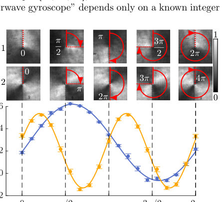
<figcaption class="paper-figure-caption"><b>Fig 1.</b> FIG. 1. Measured Ramsey fringes from a LPAI with an optical vortex, showing the increase in fringe frequency with ℓ. The interferograms in the top two rows illustrate how the helical phase structure of the optical vortex rotates in the lab frame, with red arrows indicating the angle of rotation and white text indicating the corresponding phase change of the Ramsey fringe, ϕ, from Eq. (1).</figcaption>
</figure>
<figure class="paper-figure-card">
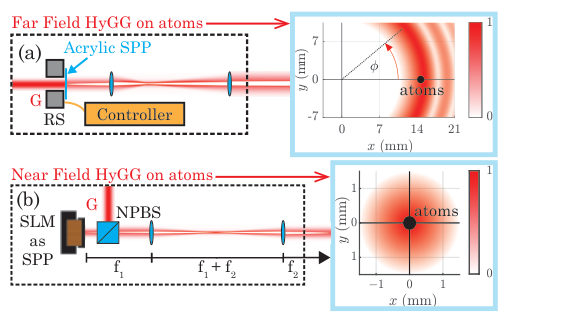
<figcaption class="paper-figure-caption"><b>Fig 2.</b> FIG. 2. (top) The cold atom and interferometer apparatus as described in the text, where the dashed box labeled (a) or (b) indicates the two different optical vortex generation options. (a) A Gaussian beam becomes a HyGG mode by helical phase modulation using an acrylic spiral phase plate (SPP). The phase plate is mounted to a rotation stage (RS) [63] and set to rotate about a fixed axis by a controller. The HyGG mode is then magnified to cover the atom cloud (to scale). (b) A Gaussian beam retro-reflects from a spatial light modulator (SLM) [64] set as a SPP. A 4f imaging system ensures that the intensity profile of the Gaussian beam incident on the SLM is positioned onto the atom cloud...</figcaption>
</figure>
<figure class="paper-figure-card">
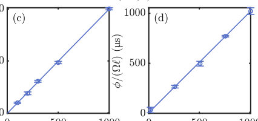
<figcaption class="paper-figure-caption"><b>Fig 3.</b> FIG. 3. (a–b) Measured interferometer phases ϕ(Ω) due to rotation of the phase plate (markers) with linear fits (solid lines), with the fit offset subtracted for clarity. Measurements for different ℓand a fixed T = 1 ms are shown in (a) and for different T and a fixed ℓ= 300 in (b). (c) Extracted slope, ϕ/(Ωteff), from (a) as a function of ℓ. Solid line is a linear fit to ϕ/Ωteff = 1.01(0.01)ℓ−5.6(5.9). (d) Extracted slope, ϕ/(Ωℓ), from (b) as a function of teff. Solid line is a linear fit to ϕ/Ωℓ= 1.01(0.02)teff + 6.5(16) µs.</figcaption>
</figure>
<figure class="paper-figure-card">
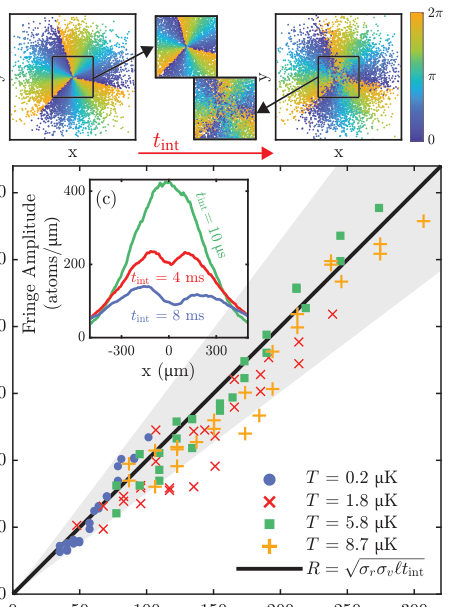
<figcaption class="paper-figure-caption"><b>Fig 4.</b> FIG. 4. (a) Schematic illustration of the effect of thermal motion of the atoms on the interferometer contrast. Atoms are initially imprinted with a helical phase (shown as variation in colour), and the atoms in the center of the cloud move more than those at the edges, obscuring the interferometer phase and leading to contrast reduction. (b) The dephasing radius R measured as a function of √σrσvℓtint over all ℓ, tint, and T. The markers are the measured data, and the black solid line is Eq. (2) with no free parameters and with the gray shaded area showing the one standard deviation model uncertainty based on uncertainties in T and σr. (c) An example of the central dip in fringe amplitude...</figcaption>
</figure>
<figure class="paper-figure-card">
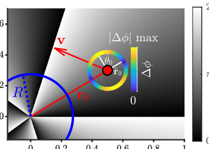
<figcaption class="paper-figure-caption"><b>Fig 5.</b> FIG. 5. A single thermal atom (red circle) is pictured at radius r moving at velocity v across the helical phase front, ϕ, of a GV mode (ℓ= 5) in the VMG. During tint, the atom will exhibit an interference phase ∆ϕ, determined by the immediate direction of motion (the colored ring). The dephasing region radius R is shown in blue.</figcaption>
</figure>
</div>

<p><strong>Summary.</strong> This paper demonstrates atom interferometry using the transverse phase structure of optical beams, specifically utilizing the helical phase windings of HyGG beams. The authors successfully measured rotations and provided a detailed theoretical and experimental characterization of how thermal motion causes spatially-dependent decoherence in the interferometer contrast. This advances the field by establishing a robust method for high-precision sensing using structured light.</p>
<p><strong>Why it may be interesting.</strong> This work is highly relevant as it pushes the metrological capabilities of atom interferometry by systematically incorporating and quantifying the effects of transverse optical structure (OAM) and thermal decoherence, providing a roadmap for next-generation quantum sensors.</p>
<details>
<summary>Detailed structure</summary>
<p><strong>Main problem.</strong> To develop and experimentally demonstrate atom interferometry utilizing the transverse phase profile (orbital angular momentum) of structured optical modes, moving beyond traditional longitudinal phase measurements.</p>
<p><strong>Main result.</strong> The interferometer successfully measures rotations with a sensitivity scaling linearly with the orbital angular momentum quantum number ($\ell$) and interrogation time ($t_{	ext{int}}$). Furthermore, the study derived and confirmed an analytical expression for the spatially-varying thermal decoherence of the fringe visibility.</p>
<p><strong>Method.</strong> The authors employed Ramsey interferometry with cold $^{87}	ext{Rb}$ atoms, using Hypergeometric Gaussian (HyGG) beams to imprint helical phase windings. They measured rotation by inducing physical rotations of the optical fields and characterized decoherence by measuring fringe contrast reduction.</p>
<p><strong>Model / system.</strong> The physical system is atom interferometry using cold $^{87}	ext{Rb}$ atoms and structured light fields (HyGG beams). The theoretical analysis models the phase accumulation ($\Delta\phi$) and contrast ($C$) by considering the dependence on atomic velocities ($\dot{r}, \dot{	heta}$) in the presence of a helical phase front.</p>
<p><strong>Key observables.</strong> Rotational phase shift ($\phi$), interferometer fringe contrast, and the measured dephasing radius ($R$).</p>
<p><strong>Important parameters / regimes.</strong> Orbital Angular Momentum quantum number ($\ell$), interrogation time ($t_{	ext{int}}$), and the atomic temperature (which dictates decoherence).</p>
<p><strong>Assumptions / limitations.</strong> The analysis relies on approximations for the change in angle ($\Delta	heta$) during ballistic expansion and assumes that the primary limitation for sensitivity is thermal phase diffusion.</p>
<p><strong>Figures summary.</strong> Figures illustrate measured Ramsey fringes showing dependence on $\ell$ and $\Omega$, and plots confirm the linear scaling of the measured dephasing radius ($R$) with the predicted analytical scaling law derived from the thermal motion.</p>
<p><strong>Paper structure.</strong> The paper progresses from demonstrating the basic rotation measurement using transverse modes to quantitatively characterizing the thermal decoherence. It develops the theoretical framework by modeling the phase accumulation in polar coordinates, leading to the final analytical expression for the contrast reduction due to velocity spread.</p>
</details>
<details>
<summary>Abstract</summary>
<p>We experimentally demonstrate atom interferometry using the transverse phase profile of an optical mode. As proof-of-principle, we use the helical phase windings of Hypergeometric Gaussian beams for Ramsey interferometry with ensembles of ballistically-expanding cold Rb87 atoms, and we show that the interferometer can measure rotations induced by a motor with a sensitivity that scales linearly with orbital angular momentum and interferometer time. We characterize the thermal decoherence of the interferometer, deriving and experimentally confirming a closed-form expression for the spatially-varying interferometer visibility arising near the singularity of the helical phase winding, motivating the use of condensed atoms in ring-shaped traps.</p>
</details>
<p><sub><a href="#top">↑ back to top</a></sub></p>

<p><a id="paper-2606.05060"></a></p>
<h3 id="high-fidelity-neutral-atom-gates-leveraging-low-rank-hessian-optimization"><a href="http://arxiv.org/abs/2606.05060v1">High-fidelity neutral atom gates leveraging low-rank Hessian optimization</a></h3>
<p><strong>Authors:</strong> Genyue Liu, Guillaume Bornet, Deniz Kurdak, Mingxuan Xiao, Chenyuan Li, Bichen Zhang, Jeff D. Thompson<br>
<strong>Type:</strong> both · <strong>Category:</strong> other · <strong>PDF:</strong> <a href="https://arxiv.org/pdf/2606.05060v1">https://arxiv.org/pdf/2606.05060v1</a><br>
<strong>Analysis basis:</strong> full PDF text, analyzed in chunks
<strong>Topic relevance:</strong> <code>QC/QI experiment</code> <strong>3/5</strong></p>
<div class="figure-strip-hint">↔ Scroll figures horizontally</div>
<div class="paper-figures-scroll">
<figure class="paper-figure-card">
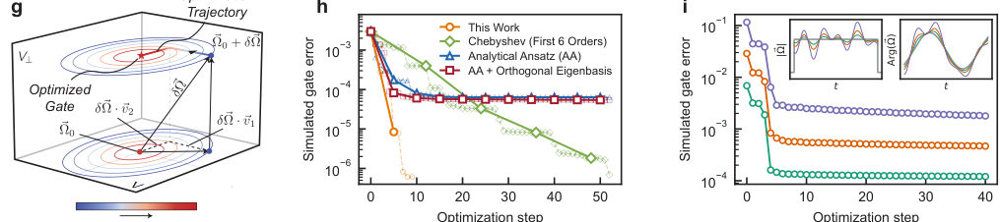
<figcaption class="paper-figure-caption"><b>Fig 1.</b> FIG. 1. Symmetric CZ gates and low-rank Hessian optimization. (a) Minimal three-level system for a symmetric Rydberg-mediated CZ gate, in which a pulse couples the qubit state |1⟩to a Rydberg state |r⟩with complex Rabi frequency ⃗Ω≡Ω(t)eiϕ(t). (b) In the two-qubit basis, the |01⟩and |10⟩states couple to the Rydberg manifold with Rabi frequency ⃗Ω, while the |11⟩state couples to the symmetric state |W⟩= (|1r⟩+ |r1⟩)/ √</figcaption>
</figure>
<figure class="paper-figure-card">
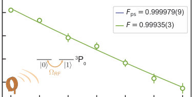
<figcaption class="paper-figure-caption"><b>Fig 2.</b> FIG. 2. Gate benchmarking with three-outcome measurement. (a) Photon-count distributions collected from two successive images used to measure the atoms in |0⟩and |1⟩, respectively. Dashed lines indicate the image- classification thresholds, and colors indicate the assigned out- comes |0⟩, |1⟩, and loss. (b) Randomized benchmarking of RF single-qubit gates. The raw fidelity is F = 0.99935(3) (green), which increases to Fps = 0.999979(9) (blue) after postselecting on no detected atom loss. In all panels, error bars indicate 1σ uncertainties.</figcaption>
</figure>
<figure class="paper-figure-card">
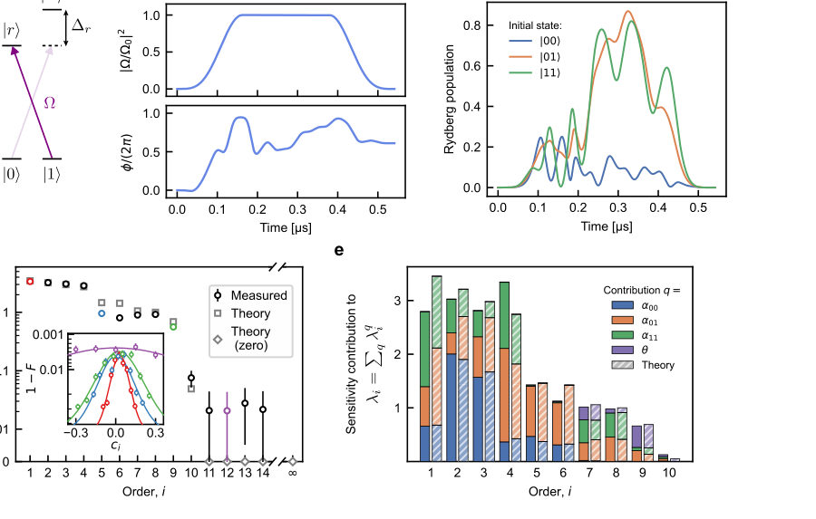
<figcaption class="paper-figure-caption"><b>Fig 3.</b> FIG. 3. Verification of the low-rank nature of the fidelity Hessian. (a) Four-level model of the states involved in the Rydberg gate. (b) Numerically optimized gate waveforms for the amplitude-robust gate. (c) Rydberg population during the gate when starting from |00⟩, |01⟩, and |11⟩. The small Zeeman splitting between |r⟩and |r′⟩results in a significant Rydberg population when starting in |00⟩. (d) Comparison between measured (circles) and calculated (squares) sensitivities λi of the CZ gate fidelity to distortions along the Hessian eigenvectors. Inset: representative measurements used to extract the sensitivity, with colors matching the highlighted points in the main figure. The fidelity...</figcaption>
</figure>
<figure class="paper-figure-card">
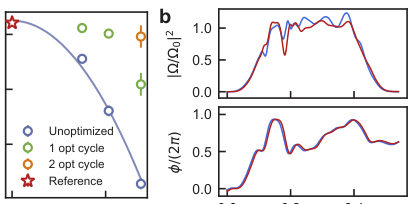
<figcaption class="paper-figure-caption"><b>Fig 4.</b> FIG. 5. Optimizing gates with Hamiltonian param- eter errors. (a) CZ gate fidelity versus reduction of the Rydberg Zeeman splitting before and after Hessian optimiza- tion. A single optimization cycle along the original Hessian eigenvectors eliminates most of the added error, with an ad- ditional cycle needed at the largest miscalibration. (b) Opti- mized laser intensity and phase profiles for the nominal case (red) and the reduced-field case (blue, 1 −∆′ r/∆r = 0.14). Error bars indicate 1σ uncertainties.</figcaption>
</figure>
</div>

<p><strong>Summary.</strong> This paper introduces a novel, efficient calibration technique for quantum gates by exploiting the low-rank structure of the gate fidelity Hessian. By restricting optimization to the principal subspace defined by this Hessian, the authors successfully demonstrate high-fidelity controlled-Z gates on neutral atoms. This method offers a general, robust framework for improving quantum gate performance in complex atomic platforms.</p>
<p><strong>Why it may be interesting.</strong> It provides a powerful, physically motivated mathematical tool (Hessian analysis) to simplify the notoriously difficult problem of optimizing complex quantum control pulses, directly applicable to state-of-the-art neutral atom quantum computing.</p>
<details>
<summary>Detailed structure</summary>
<p><strong>Main problem.</strong> The paper addresses the challenge of calibrating high-dimensional waveforms required for optimal quantum control to achieve high-fidelity multi-qubit gates.</p>
<p><strong>Main result.</strong> A low-rank Hessian optimization method is established as an efficient calibration strategy, achieving high gate fidelities (e.g., 0.99902) with demonstrated robustness to environmental variations.</p>
<p><strong>Method.</strong> The core method involves analyzing the fidelity Hessian of the gate error, exploiting its low-rank structure to restrict optimization to a small, physically relevant principal subspace.</p>
<p><strong>Model / system.</strong> The work uses neutral atom qubits, specifically $^{171}	ext{Yb}$ nuclear-spin qubits, to implement an amplitude-robust controlled-Z (CZ) gate. The dynamics are modeled using optimal control theory applied to a multi-level atomic system.</p>
<p><strong>Key observables.</strong> Gate fidelity ($F$), raw and post-selected error rates ($\epsilon$), and the eigenvalues/eigenvectors of the fidelity Hessian.</p>
<p><strong>Important parameters / regimes.</strong> The rank ($r$) of the Hessian, which is determined by the number of accessible leakage and coherent error channels; laser power variation (up to 20%).</p>
<p><strong>Assumptions / limitations.</strong> The analysis relies on a second-order expansion of the infidelity in the control parameter error ($\delta\vec{\Omega}^T H \delta\vec{\Omega}$), and the low-rank structure is assumed to capture the dominant error channels.</p>
<p><strong>Figures summary.</strong> Figures illustrate the CZ gate setup, the eigenvalue spectrum showing the few nonzero eigenvalues, the decomposition of the error into parallel and perpendicular components, and comparisons of optimization strategies.</p>
<p><strong>Paper structure.</strong> The paper develops the theory by analyzing the fidelity Hessian, applies it to the CZ gate, demonstrates the optimization protocol using experimental feedback, and verifies the robustness and error correction capabilities.</p>
</details>
<details>
<summary>Abstract</summary>
<p>Quantum optimal control can produce fast and robust multi-qubit gates, but experimentally calibrating the resulting high-dimensional waveforms remains challenging because direct searches over large parameter spaces converge slowly. Building on the low-rank structure of quantum-control landscapes, we develop and benchmark a Hessian-based calibration method for optimal-control gates. The method identifies the few waveform directions that affect fidelity to leading order, with the number of directions set by the accessible leakage and coherent error channels, and optimizes only within this principal space using closed-loop experimental feedback. We apply this approach to an amplitude-robust controlled-Z gate on metastable-state 171Yb nuclear-spin qubits. Experimentally, we verify the predicted Hessian-sensitive directions and demonstrate rapid convergence of the optimization protocol. The optimized gate reaches a raw fidelity of 0.9959(2), increasing to 0.99902(7) after postselection on no detected loss, and the performance is essentially unchanged under laser-power variations of up to 20%. We further show that the same fidelity Hessian directions can correct certain Hamiltonian parameter errors. These results establish low-rank Hessian optimization as an efficient and physically motivated calibration strategy for high-dimensional optimal-control gates, which is broadly applicable to many qubit types.</p>
</details>
<p><sub><a href="#top">↑ back to top</a></sub></p>

<p><a id="paper-2606.04738"></a></p>
<h3 id="local-multiferroic-ordering-at-room-temperature-in-collinear-magnetoelectric-antiferromagnets-induced-by-flexo-zeeman-coupling"><a href="http://arxiv.org/abs/2606.04738v1">Local multiferroic ordering at room temperature in collinear magnetoelectric antiferromagnets induced by flexo-Zeeman coupling</a></h3>
<p><strong>Authors:</strong> Paulina J. Prusik, Igor Veremchuk, Florin Radu, Andrey N. Anisimov, Pavlo Makushko, Georgy V. Astakhov, René Hübner, Alexander Edström, Jürgen Fassbender, Fabian Ganss, Massimiliano Stengel, Kirill D. Belashchenko, Denys Makarov, Oleksandr V. Pylypovskyi<br>
<strong>Type:</strong> both · <strong>Category:</strong> strongly correlated electrons · <strong>PDF:</strong> <a href="https://arxiv.org/pdf/2606.04738v1">https://arxiv.org/pdf/2606.04738v1</a><br>
<strong>Analysis basis:</strong> full PDF text, analyzed in chunks
<strong>Topic relevance:</strong> <code>spintronics-quantum-optics interface</code> <strong>3/5</strong></p>
<div class="figure-strip-hint">↔ Scroll figures horizontally</div>
<div class="paper-figures-scroll">
<figure class="paper-figure-card">
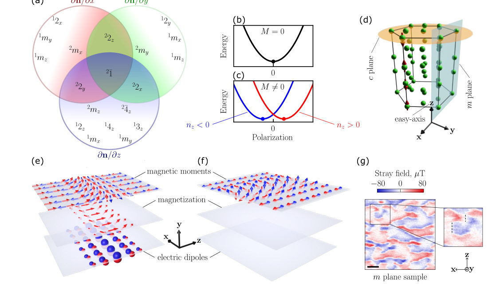
<figcaption class="paper-figure-caption"><b>Fig 1.</b> FIG. 1. Flexo-Zeeman interaction in antiferromagnets. (a) Classification of the symmetry operations within crystal- lographic point groups that allow for the flexo-Zeeman term with ∂in, i = x, y, z. The operations indicated in the white background do not forbid the flexo-Zeeman coupling. (b–c) Energy dependence on polarization: for M ≡0 (b), the minimum is at P = 0; otherwise (c), it corresponds to a spatially localized magnetoelectric multiferroic state with finite polarization. (d) Hexagonal cell of chromia that supports flexo-Zeeman coupling M ∝∂n/∂z. (e,f) Schematic difference between two AFM DWs with different spatial orientation and associated phenomena: the presence or absence of...</figcaption>
</figure>
<figure class="paper-figure-card">
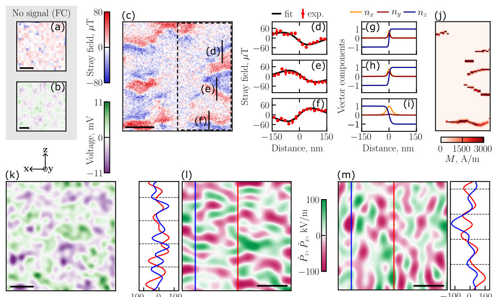
<figcaption class="paper-figure-caption"><b>Fig 2.</b> FIG. 2. Multiferroic response at domain walls in m-plane chromia at room temperature. (a) SNVM and (b) KPFM scans of the m-plane thin film after field cooling to set the dominant AFM domain when signatures of domain walls or polarization are absent. Scale bar is 0.5 µm. FC stands for field cooling. (c) SNVM scan of the m-plane thin film after zero-field cooling to set a multidomain AFM state. Scale bar is 0.5 µm. Colorbar is shared with panel (a). Representative line profiles of DWs shown in panels (d–f) are indicated with vertical solid lines. The corresponding profiles of the N´eel vector n are shown in panels (G–I). (j) Magnetization map reconstructed from the region marked by dashed...</figcaption>
</figure>
<figure class="paper-figure-card">
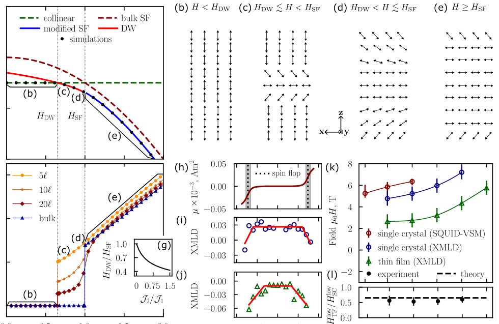
<figcaption class="paper-figure-caption"><b>Fig 3.</b> FIG. 3. Quantification of the strength of the flexo-Zeeman interaction in c-plane chromia. (a) Energy of different magnetic states as a function of the magnetic field for a 10ℓ-thick film. Lines and symbols correspond to the analytics and spin-lattice simulations, respectively. (b) Schematics of the collinear state by n (shown by double arrows). (c) Schematics of the domain wall state with the gradient along z-direction. (d) Schematics of the widening of the domain wall with an increase of magnetic field. (e) Schematics of the spin-flop state in thin film. (f) Simulated magnetization curves as a function of the magnetic field for thin films and single crystal. Field ranges for the magnetic...</figcaption>
</figure>
</div>

<p><strong>Summary.</strong> This paper demonstrates that the simple antiferromagnet $  ext{Cr}_2   ext{O}_3$ exhibits room-temperature multiferroic behavior localized at its domain walls. This effect is driven by a specific coupling mechanism called the flexo-Zeeman interaction. The findings establish a pathway for developing high-temperature, spin-driven magnetoelectric memory and logic devices.</p>
<p><strong>Why it may be interesting.</strong> While focused on condensed matter magnetism, the study of emergent electric polarization driven by spin textures (domain walls) provides a model for coupling magnetic order parameters to electric polarization, which is a key concept in advanced quantum materials and spintronics.</p>
<details>
<summary>Detailed structure</summary>
<p><strong>Main problem.</strong> The research aims to demonstrate and understand room-temperature multiferroic ordering in simple, collinear magnetoelectric antiferromagnets.</p>
<p><strong>Main result.</strong> The study experimentally and theoretically confirms that domain walls in $ ext{Cr}_2   ext{O}_3$ exhibit multiferroic behavior driven by the flexo-Zeeman interaction, leading to measurable electric polarization and magnetization.</p>
<p><strong>Method.</strong> The work combines experimental characterization using SNVM and KPFM with theoretical modeling involving the flexo-Zeeman Hamiltonian and <em>ab initio</em> calculations.</p>
<p><strong>Model / system.</strong> The physical system is the simple oxide $   ext{Cr}_2   ext{O}_3$, an antiferromagnet. The key theoretical element is the flexo-Zeeman coupling term, which links crystal symmetry, Néel vector gradients, and magnetization, leading to non-collinear magnetoelectric effects.</p>
<p><strong>Key observables.</strong> Electric polarization ($P$), uncompensated magnetization ($M$), stray field patterns (from SNVM), and the ratio of magnetic transition fields ($   ext{H}<em ext_SF="ext{SF">{    ext{DW}}/   ext{H}</em>$).}</p>
<p><strong>Important parameters / regimes.</strong> Room temperature, flexo-Zeeman coupling coefficient ($b$), and domain wall periodicity ($\approx 300-390 	ext{ nm}$).</p>
<p><strong>Assumptions / limitations.</strong> The multiferroicity is localized to specific domain wall orientations in the basal plane, and the effect can be extended to global reconfigurable channels.</p>
<p><strong>Figures summary.</strong> Figures illustrate the symmetry classification of the flexo-Zeeman interaction, energy dependence of polarization, and comparative SNVM/KPFM scans showing stripe stray fields in domain walls under different magnetic field cooling conditions.</p>
<p><strong>Paper structure.</strong> The paper progresses from establishing the theoretical framework of the flexo-Zeeman coupling, to presenting experimental measurements on domain walls in $    ext{Cr}_2   ext{O}_3$ using multiple techniques, and finally confirming the predicted magnetoelectric response and its implications for device applications.</p>
</details>
<details>
<summary>Abstract</summary>
<p>Spin-driven multiferroicity attracts significant interest due to its tunability and inherently strong magnetoelectric coupling. While this mechanism induces sizeable electric polarization, it typically occurs at low temperatures and in complex materials. In the simple oxide, the magnetoelectric antiferromagnet Cr$_2$O$_3$, we experimentally demonstrate the existence of specific domain walls that act as room-temperature multiferroic regions. This behavior stems from an anisotropic crystal-symmetry-dependent mechanism of exchange origin, which is applicable to a broad class of bipartite antiferromagnets. The key signature is the magnetization occurring at antiferromagnetic textures, driven by the flexo-Zeeman interaction. These findings establish a foundation for exploring high-temperature spin-driven multiferroicity for magnetoelectric spin-orbit memory and logic applications.</p>
</details>
<p><sub><a href="#top">↑ back to top</a></sub></p>

<p><a id="paper-2606.04802"></a></p>
<h3 id="magnetic-structure-of-diamond-euti2al20"><a href="http://arxiv.org/abs/2606.04802v1">Magnetic structure of diamond EuTi2Al20</a></h3>
<p><strong>Authors:</strong> S. W. Lovesey, D. D. Khalyavin<br>
<strong>Type:</strong> both · <strong>Category:</strong> strongly correlated electrons · <strong>PDF:</strong> <a href="https://arxiv.org/pdf/2606.04802v1">https://arxiv.org/pdf/2606.04802v1</a><br>
<strong>Analysis basis:</strong> full PDF text, analyzed in chunks
<strong>Topic relevance:</strong> <code>spintronics-quantum-optics interface</code> <strong>3/5</strong></p>
<div class="figure-strip-hint">↔ Scroll figures horizontally</div>
<div class="paper-figures-scroll">
<figure class="paper-figure-card">
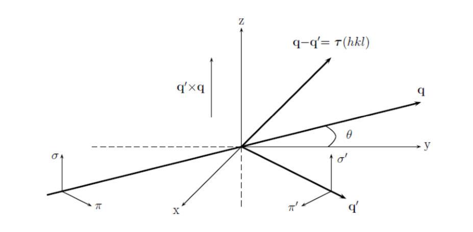
<figcaption class="paper-figure-caption"><b>Fig 1.</b> FIG. 1. Primary (σ, π) and secondary (σ&#x27;, π&#x27;) states of x-ray polarization; σ = σ&#x27; = (0, 0, 1), π = (cos(θ), sin(θ), 0), π&#x27; = (cos(θ), − sin(θ), 0). Corresponding wavevectors q and q&#x27; subtend an angle 2θ. The Bragg condition for diffraction is met when q − q&#x27; coincides with a vector τ(h, k, l) of the reciprocal lattice. The depicted Cartesian (x, y, z) coincide with local axes (ξ, η, ζ) in the nominal setting of the crystal.</figcaption>
</figure>
</div>

<p><strong>Summary.</strong> This work uses resonant X-ray diffraction theory to distinguish between two possible low-temperature magnetic symmetries of EuTi2Al20. By calculating how magnetic multipoles affect the diffraction pattern based on symmetry constraints, the authors provide a detailed diagnostic tool to resolve the ambiguity left by current experimental data.</p>
<p><strong>Why it may be interesting.</strong> While focused on solid-state magnetism, the use of advanced X-ray scattering techniques to probe subtle symmetry breaking via multipole interactions is relevant to understanding complex electronic correlations in materials.</p>
<details>
<summary>Detailed structure</summary>
<p><strong>Main problem.</strong> The paper aims to definitively determine the magnetic symmetry of the compound EuTi2Al20 that emerges below 3.3 K, distinguishing between two competing orthorhombic candidates.</p>
<p><strong>Main result.</strong> The authors demonstrate that the predicted resonant X-ray diffraction patterns, particularly those involving parity-odd multipoles, are distinct for the two candidate symmetries, offering a path for experimental discrimination.</p>
<p><strong>Method.</strong> The study combines theoretical calculations of electronic structure factors with the analysis of selection rules derived from parity mixing in the parent cubic structure.</p>
<p><strong>Model / system.</strong> The physical system is EuTi2Al20, which undergoes magnetic ordering below 3.3 K. The analysis focuses on the magnetic symmetries and the resulting magnetic multipoles formed by Eu ions.</p>
<p><strong>Key observables.</strong> Diffraction intensities measured via resonant X-ray diffraction, specifically analyzing polarization ($\sigma$ vs. $\pi$) and azimuthal angle ($\psi$) dependence.</p>
<p><strong>Important parameters / regimes.</strong> The critical temperature (3.3 K), the specific magnetic space groups ($ ext{PInna}$ and $   ext{PInn2}$), and the parity-odd multipole contributions.</p>
<p><strong>Assumptions / limitations.</strong> The analysis assumes that the selection rule from parity mixing in the parent cubic structure is preserved, and that the local axes align with the crystal axes in the nominal setting.</p>
<p><strong>Figures summary.</strong> The notes mention the use of X-ray polarization states ($\sigma, \pi, \sigma', \pi'$) and the fulfillment of the Bragg condition, suggesting figures illustrate these polarization dependencies.</p>
<p><strong>Paper structure.</strong> The paper proceeds by establishing the context of magnetic symmetry determination, detailing the theoretical framework involving parity mixing and multipole calculations for the two candidate symmetries, and concluding with a comparison of the predicted, symmetry-dependent diffraction patterns.</p>
</details>
<details>
<summary>Abstract</summary>
<p>We study magnetic symmetries of EuTi2Al20 that appear in the ordering of Eu ions below a temperature at 3.3 K, according to an analysis of substantial experimental evidence [M. Kawamata et al., J. Phys. Soc. Japan. 95, 024701 (2026)]. They descend from the cubic diamond structure that depends explicitly on mixing of orbitals with different spatial parities, e.g., diamond s- and p-atomic states. The lattice (2, 2, 2) Bragg spot, for example, is lattice forbidden in the absence of parity mixing. Our work is motivated by a first proposal that low-temperature magnetic symmetries of diamond EuTi2Al20 are orthorhombic and belong to magnetic crystal classes that include time reversal. Body-centre anti-translation in diffraction patterns is a corollary. Current experimental data does not distinguish between two orthorhombic candidates, even though one is centrosymmetric and the other one is polar. We demonstrate that magnetic parity-odd entities (multipoles) formed by mixing d-and f-atomic states at europium positions, with discreet symmetries that match those of a Dirac monopole, are different for the two candidates. Moreover, the multipoles are visible in resonant x-ray diffraction patterns. The selection rule from parity mixing in the parent cubic diamond structure is preserved, and permitted Bragg spots are different for the two candidate magnetic symmetries. Our symmetry informed diffraction patterns include rotation of the crystal about the reflection vector (an azimuthal angle scan) and a full account of x-ray polarization to spur more revealing experiments.</p>
</details>
<p><sub><a href="#top">↑ back to top</a></sub></p>

<p><a id="paper-2606.04412"></a></p>
<h3 id="leggett-garg-test-inequality-with-spin-and-flavour-neutrino-oscillations-in-a-constant-magnetic-field"><a href="http://arxiv.org/abs/2606.04412v1">Leggett-Garg test inequality with spin and flavour neutrino oscillations in a constant magnetic field</a></h3>
<p><strong>Authors:</strong> I. A. Monroy, S. D. Madrid<br>
<strong>Type:</strong> theory · <strong>Category:</strong> other · <strong>PDF:</strong> <a href="https://arxiv.org/pdf/2606.04412v1">https://arxiv.org/pdf/2606.04412v1</a><br>
<strong>Analysis basis:</strong> full PDF text, analyzed in chunks
<strong>Topic relevance:</strong> <code>entanglement &amp; information structure</code> <strong>2/5</strong> · <code>Keldysh / 2PI / non-Gaussian methods</code> <strong>1/5</strong> · <code>analog quantum simulation</code> <strong>1/5</strong> · <code>correlated / nonlocal dissipation</code> <strong>1/5</strong> · <code>driven-dissipative phase transition</code> <strong>1/5</strong> · <code>exotic spin models in light-matter</code> <strong>1/5</strong> · <code>methods for driven-dissipative</code> <strong>1/5</strong> · <code>non-equilibrium dynamics</code> <strong>1/5</strong> · <code>non-equilibrium universality</code> <strong>1/5</strong> · <code>spintronics-quantum-optics interface</code> <strong>1/5</strong></p>
<div class="figure-strip-hint">↔ Scroll figures horizontally</div>
<div class="paper-figures-scroll">
<figure class="paper-figure-card">
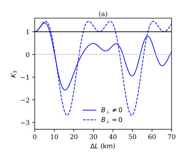
<figcaption class="paper-figure-caption"><b>Fig 1.</b> Figure 1. (a) K3 plot for the flavour oscillation in a transverse magnetic field B = 1012 T, a neutrino energy p = 1 MeV, ∆m2 = 7.58 × 10−5 eV2, a magnetic moment µ = 10−19µB and a mixing angle θ = 36.80◦. Horizontal black line denotes the maximum value of K3 allowed by LGI. (b) K3 for the flavour oscillation within a smaller length region where K3 &gt; 1, B⊥= 0, and B⊥̸= 0.</figcaption>
</figure>
<figure class="paper-figure-card">
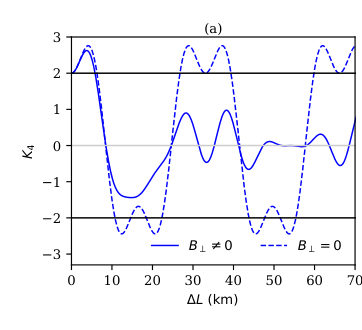
<figcaption class="paper-figure-caption"><b>Fig 2.</b> Figure 2. (a) Plot of K4 for the flavour oscillation in a transverse magnetic field B = 1012 T, a neutrino energy p = 1 MeV, ∆m2 = 7.58 × 10−5 eV2, a magnetic moment µ = 10−19µB and a mixing angle θ = 36.80◦. Horizontal black lines denote the maximum and minimum values of K4 allowed by LGI. (b) K4 for the flavour oscillation within a smaller length region where K4 &gt; 2, B⊥= 0, and B⊥̸= 0.</figcaption>
</figure>
<figure class="paper-figure-card">
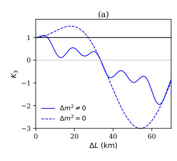
<figcaption class="paper-figure-caption"><b>Fig 3.</b> Figure 3. (a) K3 plot for the spin oscillation in a transverse magnetic field B = 1012 T, a neutrino energy p = 1 MeV, ∆m2 = 7.58 × 10−5 eV2, a magnetic moment µ = 10−19µB and a mixing angle θ = 36.80◦. Horizontal black line denotes the maximum value of K3 allowed by LGI. (b) K3 for the spin oscillation with a smaller length region where K3 &gt; 1, ∆m = 0 and ∆m ̸= 0.</figcaption>
</figure>
<figure class="paper-figure-card">
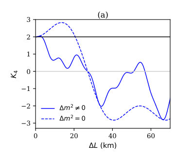
<figcaption class="paper-figure-caption"><b>Fig 4.</b> Figure 4. (a) K4 plot for the spin oscillation in a transverse magnetic field B = 1012 T, a neutrino energy p = 1 MeV, ∆m2 = 7.58 × 10−5 eV2, a magnetic moment µ = 10−19µB and a mixing angle θ = 36.80◦. Horizontal black lines denote the maximum and minimum values of K4. (b) K4 for spin oscillation within a smaller length region where K4 &gt; 2, ∆m = 0 and ∆m ̸= 0.</figcaption>
</figure>
</div>

<p><strong>Summary.</strong> This theoretical work tests the limits of quantum mechanics by examining the violation of the Leggett-Garg inequality in neutrino oscillations. The study models both flavour and spin transitions under the influence of a strong magnetic field. The main finding is that the LGI is violated in specific spatial regions, providing a quantum signature potentially observable in extreme astrophysical environments like magnetars.</p>
<p><strong>Why it may be interesting.</strong> While the core topic is particle astrophysics, the methodology—testing fundamental quantum limits (LGI) using time/space correlations derived from quantum evolution equations—is relevant to open quantum systems theory and quantum foundations.</p>
<details>
<summary>Detailed structure</summary>
<p><strong>Main problem.</strong> The paper investigates the violation of the Leggett-Garg inequality (LGI) when applied to neutrino flavour and spin oscillations in the presence of a constant magnetic field.</p>
<p><strong>Main result.</strong> The LGI is shown to be violated for both flavour and spin neutrino oscillations in regions defined by the oscillation length $\Delta L$, particularly when strong magnetic fields are present.</p>
<p><strong>Method.</strong> The analysis involves calculating specific correlation functions, $K_3$ and $K_4$, which serve as diagnostics for LGI violation, using joint probability distributions derived from the neutrino evolution equations.</p>
<p><strong>Model / system.</strong> The system models neutrino flavour ($
u_L^e \leftrightarrow 
u_L^\mu$) and spin ($
u_L^e \leftrightarrow 
u_R^e$) oscillations governed by the Dirac equation, incorporating the effects of a constant transverse magnetic field ($B_\perp$).</p>
<p><strong>Key observables.</strong> The LGI violation is quantified by the correlator functions $K_3$ and $K_4$, and the primary observables are the flavour and spin oscillation probabilities $P(t)$.</p>
<p><strong>Important parameters / regimes.</strong> Key parameters include the mass squared difference ($\Delta m^2$), mixing angle ($   heta$), neutrino energy ($p$), and the magnetic field strength ($B \sim 10^{12}$ T).</p>
<p><strong>Assumptions / limitations.</strong> The analysis utilizes the ultra-relativistic approximation ($p \gg m$) and treats the system dynamics using the effective Hamiltonian derived from the Dirac equation.</p>
<p><strong>Figures summary.</strong> The figures plot the LGI test functions ($K_3$ and $K_4$) as a function of distance ($L$ or $\Delta L$) for spin oscillation, comparing results for zero and non-zero $\Delta m^2$ in a transverse magnetic field.</p>
<p><strong>Paper structure.</strong> The paper establishes the LGI framework, derives the oscillation probabilities for flavour and spin transitions in a magnetic field, and then calculates the specific correlation functions $K_3$ and $K_4$ to demonstrate the violation of the inequality.</p>
</details>
<details>
<summary>Abstract</summary>
<p>The Leggett-Garg inequality (LGI), an analogue of Bellś inequality involving correlations of measurements of one observable on a system at different times, stands as one of the hallmark tests of quantum mechanics against classical predictions. In this work, we investigate its implications in the context of neutrino flavour ($ν_{e}^{L}\leftrightarrowν_μ^{L}$) and spin ($ν_{e}^{L}\leftrightarrowν_{e}^{R}$) oscillations in the presence of a constant transverse magnetic field. For systems with strong magnetic fields, we show that, for both cases, there are length regions $ΔL$ where the LGI is violated, as quantified by the correlator functions $K_{3}$ and $K_{4}$.</p>
</details>
<p><sub><a href="#top">↑ back to top</a></sub></p>

<p><a id="paper-2606.04426"></a></p>
<h3 id="discrete-signaling-mediates-chaotic-regularization-in-recurrent-neural-networks"><a href="http://arxiv.org/abs/2606.04426v1">Discrete signaling mediates chaotic regularization in recurrent neural networks</a></h3>
<p><strong>Authors:</strong> Jan Bauer, Christian Keup, Jonathan Kadmon, Moritz Helias<br>
<strong>Type:</strong> theory · <strong>Category:</strong> disordered systems and neural networks · <strong>PDF:</strong> <a href="https://arxiv.org/pdf/2606.04426v1">https://arxiv.org/pdf/2606.04426v1</a><br>
<strong>Analysis basis:</strong> full PDF text, analyzed in chunks
<strong>Topic relevance:</strong> <code>Keldysh / 2PI / non-Gaussian methods</code> <strong>2/5</strong> · <code>methods for driven-dissipative</code> <strong>2/5</strong> · <code>driven-dissipative phase transition</code> <strong>1/5</strong> · <code>non-equilibrium dynamics</code> <strong>1/5</strong> · <code>non-equilibrium universality</code> <strong>1/5</strong></p>
<div class="figure-strip-hint">↔ Scroll figures horizontally</div>
<div class="paper-figures-scroll">
<figure class="paper-figure-card">
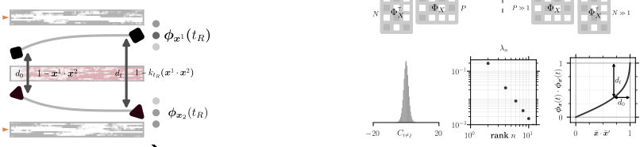
<figcaption class="paper-figure-caption"><b>Fig 1.</b> Figure 1. Describing computation in RNNs in kernel space. a A recurrent neural network (RNN) receives an input stimulus x at an initial time t0. The stimulus is propagated by disordered random synapses Jij of strength g to produce a linear readout yx(tR) = w ⋅ϕJ x(tR) at a readout time tR. b Trajectories of two stimuli x1 (square marker) and x2 (triangle marker) in a chaotic network are characterized by an increase of their separation with time. c Propagation of a collection of P stimuli X that gets deformed to the neural code manifold ΦJ X(tR) as a result of the chaotic network activity. c, left Network picture: A function on the input stimuli X is implemented by projecting the propagated...</figcaption>
</figure>
<figure class="paper-figure-card">
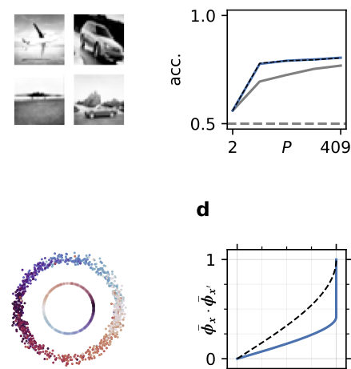
<figcaption class="paper-figure-caption"><b>Fig 2.</b> Figure 2. Chaotic network models can perform reliable computation despite rough neural code. a Four exam- ples from the image dataset CIFAR10. b Accuracy of the binary classification between cars and planes as a function of the number of presented training samples P. Blue: Heaviside- activated (i.e., T = H) recurrent network with Glauber dy- namics as in Eq. (3) with g = 1.1. Gray: Linear classifier. Dashed black: Single-layer Heaviside-activated feedforward network. Readout time for the recurrent network, and regu- larization for the feedforward network were optimized in the networks to give best performance for each number of train- ing patterns. Horizontal line indicates baseline of...</figcaption>
</figure>
<figure class="paper-figure-card">
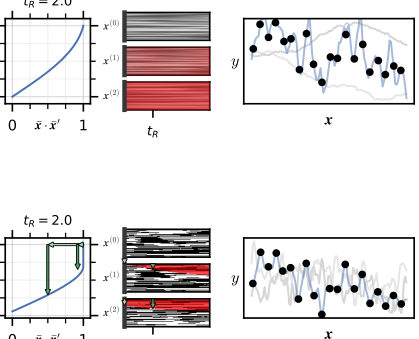
<figcaption class="paper-figure-caption"><b>Fig 3.</b> Figure 3. Strong local chaos acts as effective regular- ization in discretely-coupled networks. a Inference for a continuously signaling network Eq. (4), b for discrete sig- naling Eq. (3). Left panels show the kernel functions for each network. Center panels show a subset of the network activity in simulation of networks with N = 6000 units for a base stimulus x(0), a mild perturbation thereof x(1) = x(0) + ϵ realized through changing the state of a single neuron, and a noticeably distinct stimulus x(2) in which 1/4 of the neurons are changed relative to x(0); changes are applied at initial time t = 0 (gray bars). Light green arrows indicate the size of the initial perturbation, dark green...</figcaption>
</figure>
<figure class="paper-figure-card">
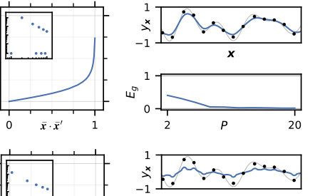
<figcaption class="paper-figure-caption"><b>Fig 4.</b> Figure 4. Chaotic rate networks have a rich spectral repertoire. Computation in the regular (top) and chaotic regime (bottom). Left panels show the kernel functions in either regime after stimulus propagation for t = 20τ and white noise variance D = 0.01. Inset shows the eigenvalues λn of the kernel as in Eq. (12), with identical y-axis between panels. Right upper panels show a 1D regression task that is composed of different length scales with respect to x and constitutes the regression target, with training data indicated as black markers, with the blue line being the kernel predictor Eq. (11). Right lower panels show the generalization error for this task as a function of the number of...</figcaption>
</figure>
<figure class="paper-figure-card">
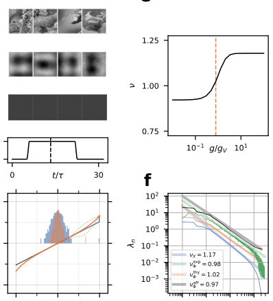
<figcaption class="paper-figure-caption"><b>Fig 5.</b> Figure 5. Nonlinearities in neural networks produce high-frequency power laws. a Four example images from a natural image subset of ImageNet [4] imprinted to the network. b Four low-frequency modes of the images that dominate the spectrum (top), and four high-frequency modes at the end of the spectrum (bottom). c Temporal envelope of the neural data used in [4]. The readout time is indicated by a dashed line. d Kernel function (orange) as obtained through Eq. (10) for g/gV = 1. Gray curve is the affine-linear kernel Eq. (23) that produces the same slope ν of kernel eigenvalues λn = 1/nν, as do the dashed-gray nonlinear kernels that differ only outside of the support of data XX⊺. Overlayed...</figcaption>
</figure>
</div>

<p><strong>Summary.</strong> This theoretical work develops a framework showing that the inherent chaos in recurrent neural networks does not preclude stable computation. By analyzing the network's kernel structure using advanced mean-field techniques, the authors prove that this chaos acts as a beneficial intrinsic regularizer, enabling smooth, generalizable coding despite microscopic unpredictability.</p>
<p><strong>Why it may be interesting.</strong> The mathematical machinery developed (DMFT, replica method) for analyzing correlations in complex, non-equilibrium systems like RNNs shares conceptual overlap with techniques used in analyzing disordered quantum systems, such as spin glasses or spin-boson models.</p>
<details>
<summary>Detailed structure</summary>
<p><strong>Main problem.</strong> The paper addresses the fundamental conflict between the intrinsic chaotic nature of recurrent neural networks and the necessity for their population codes to exhibit smooth, stable representations for functional computation.</p>
<p><strong>Main result.</strong> Chaotic dynamics induce a structural property—local roughness while maintaining global smoothness—that acts as an intrinsic regularizer, allowing chaotic systems to sustain coherent, differentiable coding.</p>
<p><strong>Method.</strong> The authors combine kernel methods with Dynamical Mean-Field Theory (DMFT) and the replica method to derive the effective kernel describing the network's representation geometry.</p>
<p><strong>Model / system.</strong> The study analyzes Recurrent Neural Networks (RNNs) operating in regimes of intrinsic chaos, comparing the theoretical predictions derived from continuous-rate models against those from discrete, spiking (Glauber) dynamics.</p>
<p><strong>Key observables.</strong> Representation geometry (smoothness/roughness), power-law spectral signatures, and the two-replica kernel function $k_{ts}(x_1 \cdot x_2)$.</p>
<p><strong>Important parameters / regimes.</strong> Synaptic strength ($g$), network size ($N$), and the ratio of recurrent to feedforward coupling ($g/g_V$).</p>
<p><strong>Assumptions / limitations.</strong> The analysis relies heavily on the large-$N$ limit (mean-field theory) and the assumption that the system's statistics can be captured by the two-replica correlation function.</p>
<p><strong>Figures summary.</strong> Figures illustrate the comparison of classification accuracy and kernel functions between chaotic discrete networks and regular/feedforward models, demonstrating the regularization effect of local chaos.</p>
<p><strong>Paper structure.</strong> The paper progresses by first establishing the theoretical link between chaos and representation geometry, then deriving the mean-field equations for the two-replica kernel using DMFT, and finally contrasting the resulting kernel structure for continuous versus discrete signaling dynamics.</p>
</details>
<details>
<summary>Abstract</summary>
<p>Cortical circuits operate in a regime of intrinsic chaos, where even tiny changes in input can lead to divergent neural responses. Yet, remarkably, population codes in the brain vary smoothly with sensory stimuli, forming coherent representational manifolds. How can chaotic networks sustain such stable coding? Here, we develop a theoretical framework that links the microscopic chaos of recurrent networks to the macroscopic geometry of neural representations. Combining kernel methods with dynamical mean-field theory, we show that chaotic dynamics induce local roughness (introducing sharp distortions at small scales) while preserving global smoothness across larger stimulus variations. This structural property acts as an intrinsic regularizer, enhancing generalization while maintaining expressivity. Moreover, we show how chaotic networks naturally produce power-law spectral signatures, closely matching experimental observations in cortical recordings. These results explain how chaotic spiking networks can sustain smooth, differentiable population codes and establish a theoretical framework linking network dynamics, computational structure, and recorded neural activity.</p>
</details>
<p><sub><a href="#top">↑ back to top</a></sub></p>

<p><a id="paper-2606.04837"></a></p>
<h3 id="maximal-minimal-spacing-for-random-points"><a href="http://arxiv.org/abs/2606.04837v1">Maximal Minimal Spacing for Random Points</a></h3>
<p><strong>Authors:</strong> Fabio Deelan Cunden, Noemi Cuppone, Giovanni Gramegna, Pierpaolo Vivo<br>
<strong>Type:</strong> theory · <strong>Category:</strong> statistical mechanics · <strong>PDF:</strong> <a href="https://arxiv.org/pdf/2606.04837v1">https://arxiv.org/pdf/2606.04837v1</a><br>
<strong>Analysis basis:</strong> full PDF text, analyzed in chunks
<strong>Topic relevance:</strong> <code>analog quantum simulation</code> <strong>2/5</strong> · <code>Keldysh / 2PI / non-Gaussian methods</code> <strong>1/5</strong> · <code>entanglement &amp; information structure</code> <strong>1/5</strong> · <code>methods for driven-dissipative</code> <strong>1/5</strong> · <code>non-equilibrium dynamics</code> <strong>1/5</strong></p>
<div class="figure-strip-hint">↔ Scroll figures horizontally</div>
<div class="paper-figures-scroll">
<figure class="paper-figure-card">
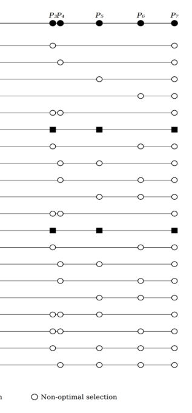
<figcaption class="paper-figure-caption"><b>Fig 1.</b> Figure 1. Choose 𝑀+1 points out of 𝑁+1 so as to maximize their minimal spacing. Here 𝑁= 7, and 𝑀= 4. The top line contains the initial configuration (black circles). The 6 3  = 20 possible selections of points are in the lines below. The optimal ones (the max-min spacing in this case is (𝑃5 −𝑃3)) are in black squares, while the others are in white circles.</figcaption>
</figure>
<figure class="paper-figure-card">
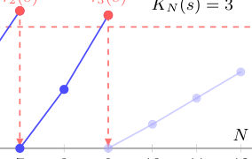
<figcaption class="paper-figure-caption"><b>Fig 2.</b> Figure 2. Sketch of the threshold-resetting random walk. In this example, there are 𝐾𝑁(𝑠) = 3 complete cycles of length 𝐿1(𝑠) = 4, 𝐿2(𝑠) = 3, 𝐿3(𝑠) = 2 in 𝑁= 12 steps.</figcaption>
</figure>
<figure class="paper-figure-card">
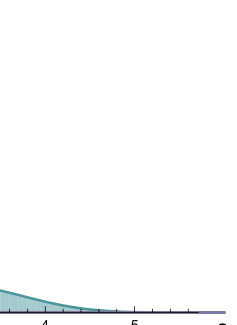
<figcaption class="paper-figure-caption"><b>Fig 3.</b> Figure 3. Max-min spacing 𝑆∗for gaps (𝑇𝑗) 𝑗≥1 uniformly distributed in the interval [0, 1]. Numerical simulations (histograms) compared to the explicit formula (3.3). Here 𝑁= 6, and the sample size is 105.</figcaption>
</figure>
<figure class="paper-figure-card">
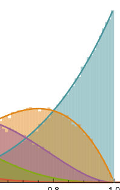
<figcaption class="paper-figure-caption"><b>Fig 4.</b> Figure 4. Relative max-min spacing 𝑀e𝑆for exponential gaps. Numerical simulations (histograms) compared to the explicit formula (4.4). Here 𝑁= 6, and the sample size is 105.</figcaption>
</figure>
<figure class="paper-figure-card">
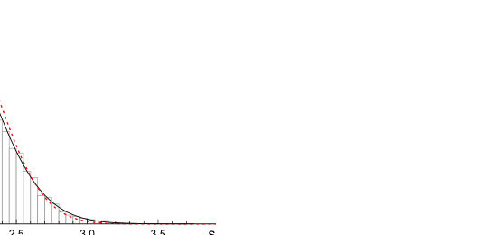
<figcaption class="paper-figure-caption"><b>Fig 5.</b> Figure 6. Max-min spacing 𝑆∗for points with random i.i.d. exponential gaps. Nu- merical simulations (histograms) over a sample size of 104 obtained using the iterative interval refined method described in Sec. 5. In black the explicit formula (4.5). The dotted-red curve is the Gaussian approximation (4.16). Here 𝑁= 60, and 𝑀= 20. (Total number of selections: |𝐼𝑀,𝑁| = 59 19  ≃1015.)</figcaption>
</figure>
</div>

<p><strong>Summary.</strong> This paper provides a rigorous statistical mechanics treatment of maximizing the minimum spacing among randomly placed points. It reformulates the problem using a threshold-resetting random walk, yielding exact formulas for the tail probability $P(S^* \ge s)$. The results are crucial for understanding optimal resource dispersion in various physical models.</p>
<p><strong>Why it may be interesting.</strong> The mathematical techniques developed—relating optimal resource allocation (spacing maximization) to random walk statistics and large deviation theory—are highly relevant for analyzing resource constraints in quantum information or many-body systems.</p>
<details>
<summary>Detailed structure</summary>
<p><strong>Main problem.</strong> The paper addresses the problem of maximizing the minimal spacing ($S^*$) when selecting $M+1$ points from an initial set of $N+1$ random points on a line.</p>
<p><strong>Main result.</strong> It derives exact distributional identities and asymptotic formulas for $P(S^* \ge s)$ for general i.i.d. gap distributions, relating it to first-passage functionals of a threshold-resetting random walk.</p>
<p><strong>Method.</strong> The core methodology involves mapping the optimization problem to a random walk process, utilizing generating functions, and employing saddle-point approximation techniques for large $N$ and $M$.</p>
<p><strong>Model / system.</strong> The model consists of $N+1$ points on a line with successive spacings ($T_j$) assumed to be independent and identically distributed (i.i.d.). The analysis covers general, exponential, and geometric gap distributions.</p>
<p><strong>Key observables.</strong> The maximal minimal spacing ($S^*$), the tail probability $P(S^* \ge s)$, and the relative spacing $eS$.</p>
<p><strong>Important parameters / regimes.</strong> The ratio $\alpha = M/N$, the total number of gaps $N$, and the number of selected blocks $M$.</p>
<p><strong>Assumptions / limitations.</strong> The initial spacings $T_j$ are assumed to be i.i.d., and the analysis often focuses on the large $N$ limit.</p>
<p><strong>Figures summary.</strong> Figures illustrate the max-min spacing problem for small $N, M$, sketch the threshold-resetting random walk cycles, and show numerical comparisons of $S^*$ for uniform and exponential gaps.</p>
<p><strong>Paper structure.</strong> The paper builds from defining the max-min spacing problem, reformulating it via a threshold-resetting random walk, deriving exact distributional identities using generating functions, and finally establishing asymptotic results using saddle-point methods for different gap types.</p>
</details>
<details>
<summary>Abstract</summary>
<p>From $N+1$ random points on a line we wish to select $M+1$ points so as to maximize the minimal spacing between them. We consider an initial configuration with independent and identically distributed spacings. The problem is equivalent to optimally grouping consecutive gaps into $M$ blocks and maximizing the smallest block sum. For general gap distributions, and for all $M\leq N$, we derive exact distributional identities for the optimal spacing and obtain its asymptotic behavior. The problem admits a reformulation in terms of a threshold-resetting random walk. The walk advances by successive random increments and is reset to the origin upon exceeding a fixed threshold. The probability that the optimal spacing exceeds a given value coincides with the probability that the walk completes at least $M$ reset cycles within $N$ steps. This yields an exact representation in terms of first-passage functionals of the walk. The same mapping suggests a numerical scheme for the max-min spacing problem in the regime of large $N$ and $M$, whose accuracy is tested against the exact results obtained here.</p>
</details>
<p><sub><a href="#top">↑ back to top</a></sub></p>

<p><a id="paper-2606.04390"></a></p>
<h3 id="shortcomings-and-capacities-of-real-constrained-neural-networks-in-complex-spaces"><a href="http://arxiv.org/abs/2606.04390v1">Shortcomings and capacities of real-constrained neural networks in complex spaces</a></h3>
<p><strong>Authors:</strong> Andrew Gracyk<br>
<strong>Type:</strong> theory · <strong>Category:</strong> disordered systems and neural networks · <strong>PDF:</strong> <a href="https://arxiv.org/pdf/2606.04390v1">https://arxiv.org/pdf/2606.04390v1</a><br>
<strong>Analysis basis:</strong> full PDF text, analyzed in chunks
<strong>Topic relevance:</strong> <code>Keldysh / 2PI / non-Gaussian methods</code> <strong>2/5</strong> · <code>entanglement &amp; information structure</code> <strong>2/5</strong> · <code>methods for driven-dissipative</code> <strong>1/5</strong></p>
<div class="figure-strip-hint">↔ Scroll figures horizontally</div>
<div class="paper-figures-scroll">
<figure class="paper-figure-card">
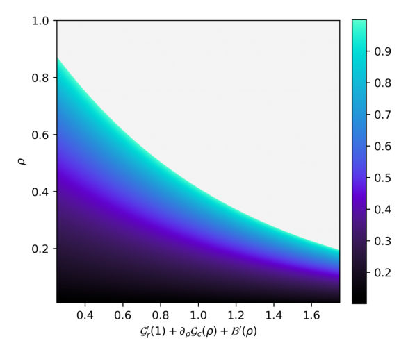
<figcaption class="paper-figure-caption"><b>Fig 1.</b> Figure 1: We plot Γ across varying ρ and G{r,c}, B. We suppress values of Γ /∈[0, 1] in the plot. In theory, G{r,c}, B are not free parameters, and Γ /∈[0, 1] is not an actual scenario. We take X to be plot value and B′ = X −G′ r −∂ρGc. We attempt to choose G′ r, ∂ρGc, B′ consistent with a real scenario. The void space is plausible mathematically but does not represent a realistic scenario in regard to physical constraints on the spin glass system. We remark this plot is primarily a proxy for illustrative purposes to convey a typical Γ in its valid regime.</figcaption>
</figure>
<figure class="paper-figure-card">
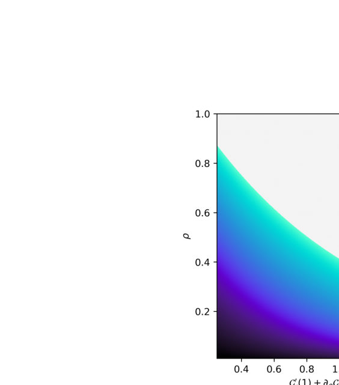
<figcaption class="paper-figure-caption"><b>Fig 2.</b> Figure 2: We plot the same as Figure 1 but we take ∂ρGc = X −B′ −G′ r for B′, G′ r fixed.</figcaption>
</figure>
<figure class="paper-figure-card">
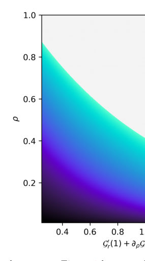
<figcaption class="paper-figure-caption"><b>Fig 3.</b> Figure 3: We plot the same as Figure 1 but we take G′ r = X −B′ −∂ρGc for B′, ∂ρGc fixed.</figcaption>
</figure>
</div>

<p><strong>Summary.</strong> This theoretical paper calculates the asymptotic ratio of storage capacities for complex neural networks when real constraints are imposed on the pre-activations. It employs sophisticated techniques from statistical physics, including the replica method and the Harish-Chandra-Itzykson-Zuber formula. The work provides a rigorous, albeit highly technical, analysis of model expressivity in complex spaces.</p>
<p><strong>Why it may be interesting.</strong> While focused on neural networks, the mathematical machinery—replica methods, integration over compact groups, and free energy calculations—is highly relevant to understanding phase transitions and complexity in many-body quantum systems.</p>
<details>
<summary>Detailed structure</summary>
<p><strong>Main problem.</strong> The paper investigates the asymptotic ratio of storage capacities for complex-valued neural networks when the pre-activations are constrained to be real versus unconstrained complex values.</p>
<p><strong>Main result.</strong> The authors derive the asymptotic ratio $\Gamma$ using advanced mathematical tools, suggesting a non-trivial dependence on the network structure and constraints.</p>
<p><strong>Method.</strong> The analysis heavily employs the replica method, saddle-point evaluations, and advanced mathematical identities like the Harish-Chandra-Itzykson-Zuber (HCIZ) formula for integration over compact manifolds.</p>
<p><strong>Model / system.</strong> The model is a complex-valued neural network analyzed in the context of its storage capacity and expressivity, utilizing concepts from statistical physics like the Gardner volume.</p>
<p><strong>Key observables.</strong> Storage capacities ($\alpha_r, \alpha_c$), the asymptotic ratio ($\Gamma$), and the quenched free energy ($f$).</p>
<p><strong>Important parameters / regimes.</strong> Sparsity constraint parameter ($
ho$), generalization margin ($\kappa$), and the network size ($N$).</p>
<p><strong>Assumptions / limitations.</strong> The derivation relies on the replica symmetric ansatz, the exchange of limit orders, and the applicability of advanced asymptotic approximations like Laplace's method.</p>
<p><strong>Figures summary.</strong> Figure 1 plots the ratio $\Gamma$ across varying parameters $
ho$ and $G_{r,c}, B$, illustrating the theoretically valid regime $[0, 1]$.</p>
<p><strong>Paper structure.</strong> The paper progresses by first establishing the core problem (ratio of capacities), then developing the mathematical machinery using the replica trick and complex integration over unitary/orthogonal groups, culminating in the final asymptotic expressions for the capacity.</p>
</details>
<details>
<summary>Abstract</summary>
<p>We find the asymptotic ratio between the storage capacities when enforcing real pre-activations in a complex hypothesis class as opposed to complex ones in the same class. Our methods depend on Gardner volume comparisons at critical capacity. Our proof relies on an application of the Harish-Chandra-Itzykson-Zuber (HCIZ) formula, nonstandard in literature. With the HCIZ formula, we may obtain a more robust approximation for the final asymptotic ratio. This strategy is applicable to our work specifically since we integrate over the unitary and orthogonal compact manifolds, facilitated via the Weyl integration formula and the Haar measure.</p>
</details>
<p><sub><a href="#top">↑ back to top</a></sub></p>

<p><a id="paper-2606.04353"></a></p>
<h3 id="spectral-fusion-for-identifying-early-state-exclusion-in-symmetric-quantum-spin-chains"><a href="http://arxiv.org/abs/2606.04353v1">Spectral Fusion for Identifying Early State Exclusion in Symmetric Quantum Spin Chains</a></h3>
<p><strong>Authors:</strong> Mia Escobar, Valentin Garcia, Anastasiia Minenkova<br>
<strong>Type:</strong> theory · <strong>Category:</strong> other · <strong>PDF:</strong> <a href="https://arxiv.org/pdf/2606.04353v1">https://arxiv.org/pdf/2606.04353v1</a><br>
<strong>Analysis basis:</strong> full PDF text, analyzed in chunks
<strong>Topic relevance:</strong> <code>analog quantum simulation</code> <strong>2/5</strong> · <code>entanglement &amp; information structure</code> <strong>1/5</strong> · <code>exotic spin models in light-matter</code> <strong>1/5</strong> · <code>non-equilibrium dynamics</code> <strong>1/5</strong></p>
<div class="figure-strip-hint">↔ Scroll figures horizontally</div>
<div class="paper-figures-scroll">
<figure class="paper-figure-card">
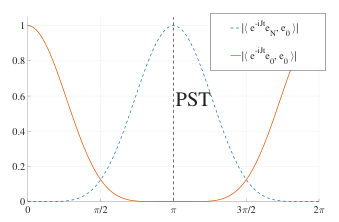
<figcaption class="paper-figure-caption"><b>Fig 1.</b> Fig. 3 Examples of PST occurrences for J with the reduced equidistant spectrum {0, ±1, ±2, ±3}.</figcaption>
</figure>
<figure class="paper-figure-card">
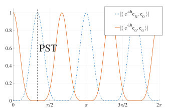
<figcaption class="paper-figure-caption"><b>Fig 2.</b> Fig. 4 Examples of PST occurrences for J with the equidistant spectrum {0, ±3, ±6, ±9}.</figcaption>
</figure>
<figure class="paper-figure-card">
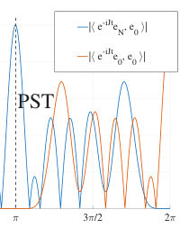
<figcaption class="paper-figure-caption"><b>Fig 3.</b> Fig. 5 Example of the ESE occurrences for J with the reduced spectrum {0, ±3, ±8, ±9, ±12}. Given that J realizes PST for the first time at T0 = π, then A(t) has a root of multiplicity 10 at t = π.</figcaption>
</figure>
<figure class="paper-figure-card">
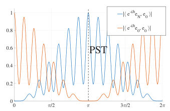
<figcaption class="paper-figure-caption"><b>Fig 4.</b> Fig. 7 Example of no ESE occur- rences for J with the reduced spectrum {0, ±1, ±14, ±15, ±16, ±19}.</figcaption>
</figure>
<figure class="paper-figure-card">
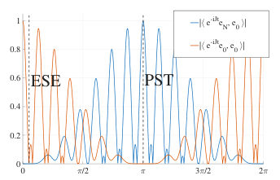
<figcaption class="paper-figure-caption"><b>Fig 5.</b> Fig. 8 Example of the ESE occur- rences for J with the reduced spectrum {0, ±1, ±14, ±15, ±16, ±17}.</figcaption>
</figure>
</div>

<p><strong>Summary.</strong> This paper analyzes the spectral conditions governing quantum state transfer in 1D spin chains, focusing on the phenomenon of Early State Exclusion (ESE). By introducing the spectral fusion (SF) process, the authors construct infinite families of Hamiltonians that exhibit both perfect state transfer and ESE. This deepens the understanding of how the spectral structure dictates the time evolution and information transport properties of quantum many-body systems.</p>
<p><strong>Why it may be interesting.</strong> This work provides deep spectral insights into quantum transport phenomena in 1D systems, connecting the algebraic structure of the Hamiltonian (Jacobi matrix) directly to observable quantum dynamics like state transfer and its early failure modes.</p>
<details>
<summary>Detailed structure</summary>
<p><strong>Main problem.</strong> The paper investigates the phenomenon of Early State Exclusion (ESE) in quantum spin chains, which is the vanishing of the time-evolved state overlap with the initial state at a time earlier than the first Perfect State Transfer (PST).</p>
<p><strong>Main result.</strong> The authors provide explicit constructions, using a process called spectral fusion (SF), to build infinite families of Jacobi matrices exhibiting both PST and ESE, thereby broadening the known class of such spin chains.</p>
<p><strong>Method.</strong> The analysis heavily relies on the spectral properties of the governing Jacobi matrix, utilizing polynomial sequences defined by three-term recurrence relations and analyzing the time evolution amplitude function $A(t)$ in terms of the matrix eigenvalues.</p>
<p><strong>Model / system.</strong> The system is a one-dimensional quantum spin chain with nearest-neighbor interactions, whose dynamics in the single-excitation subspace are modeled by a real symmetric tridiagonal Jacobi matrix $J$.</p>
<p><strong>Key observables.</strong> Perfect State Transfer (PST) time $T_0$, the amplitude function $A(t) = \langle e^{-iJt} e_0, e_0 
angle$, and the occurrence of ESE at time $ au &lt; T_0$.</p>
<p><strong>Important parameters / regimes.</strong> The length of the chain (parity of $N+1$), the structure of the spectrum $\sigma(J)$, and the convergence parameter $m$ used in spectral fusion.</p>
<p><strong>Assumptions / limitations.</strong> The analysis focuses on the single-excitation subspace, and several results assume the spectrum $\sigma(J)$ is symmetric or 'reduced' for simplification.</p>
<p><strong>Figures summary.</strong> Figures illustrate the quantum spin-chain model, examples of ESE occurrences relative to PST times, and comparisons between different spectral structures (e.g., T-Rex vs. Krawtchouk chains) regarding ESE.</p>
<p><strong>Paper structure.</strong> The paper progresses by defining the problem (ESE vs. PST), deriving amplitude formulas based on spectral properties, introducing the spectral fusion (SF) process as an inverse operation to spectral surgery, and finally proving convergence theorems to construct infinite families of matrices exhibiting these behaviors.</p>
</details>
<details>
<summary>Abstract</summary>
<p>Perfect state transfer (PST) in one-dimensional quantum spin chains provides a natural setting in which quantum information transport can be analyzed using spectral methods. In the single-excitation subspace, the dynamics of a chain with nearest-neighbor interactions are governed by a Jacobi matrix, allowing questions of state transfer to be formulated in terms of eigenvalue distributions and symmetry properties of eigenvectors. In this work, we investigate the phenomenon of \emph{early state exclusion} (ESE), whereby the overlap of the time-evolved state with the initial state vanishes at a time strictly earlier than the first occurrence of perfect state transfer. Building on earlier constructions of Hamiltonians exhibiting PST with and without ESE, we provide explicit Jacobi matrix realizations for arbitrary odd-length chains and establish general conditions under which ESE occurs or does not occur. We propose the process of \emph{spectral fusion} (SF) to build infinite families of such Hamiltonians. These results broaden the known class of spin chains displaying early state exclusion and further clarify the role of spectral structure of the Hamiltonians.</p>
</details>
<p><sub><a href="#top">↑ back to top</a></sub></p>

<p><a id="paper-2606.04936"></a></p>
<h3 id="stabilizing-the-parquet-problem"><a href="http://arxiv.org/abs/2606.04936v1">Stabilizing the parquet problem</a></h3>
<p><strong>Authors:</strong> Herbert Eßl, Stefan Rohshap, Marcel Gievers, Markus Wallerberger, Alessandro Toschi, Anna Kauch<br>
<strong>Type:</strong> theory · <strong>Category:</strong> strongly correlated electrons · <strong>PDF:</strong> <a href="https://arxiv.org/pdf/2606.04936v1">https://arxiv.org/pdf/2606.04936v1</a><br>
<strong>Analysis basis:</strong> full PDF text, analyzed in chunks
<strong>Topic relevance:</strong> <code>Keldysh / 2PI / non-Gaussian methods</code> <strong>2/5</strong> · <code>analog quantum simulation</code> <strong>1/5</strong> · <code>methods for driven-dissipative</code> <strong>1/5</strong></p>
<div class="figure-strip-hint">↔ Scroll figures horizontally</div>
<div class="paper-figures-scroll">
<figure class="paper-figure-card">
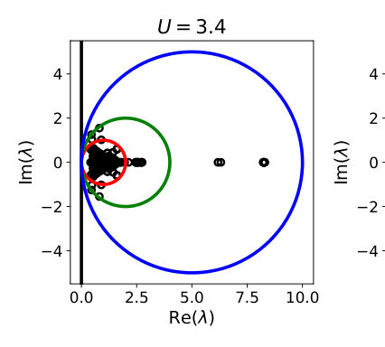
<figcaption class="paper-figure-caption"><b>Fig 1.</b> Figure 1: The eigenvalues λ (black circles) for the parquet formalism of the HA for two different values of U at ph-symmetry in the complex plane. Colorful circles show the stability regions for given damping parameters p. Left: Fixed point can be stabilized with damping, i.e., by decreasing p. Right: Fixed point cannot be stabilized with damping since some eigenvalues have a negative real part. The vertical black line marks where Re(λ) = 0.</figcaption>
</figure>
<figure class="paper-figure-card">
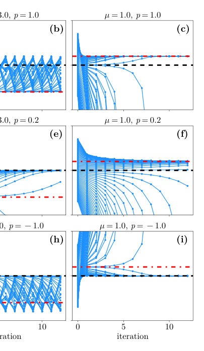
<figcaption class="paper-figure-caption"><b>Fig 2.</b> Figure 2: Trajectories of fixed-point iterations with the iterative map f = x+µx− x2, Eq. (18), for different starting points x0 ∈[−3.49, 3.51] in steps of ∆x0 = 0.1. Black (red) dashed lines indicate the (un)physical fixed point x∗= 0(µ). The first column of panels shows the fixed-point iteration for the equation µ = −1, the middle column for µ = −3, and the third one for µ = 1. Panels (a)–(c) are computed with a damping parameter p = 1.0, while panels (d)–(f) with p = 0.2, which fixes the convergence problems of the case µ = −3. In panel (i), we apply the stabilization method by switching the sign of the damping parameter (p = −1.0) resulting in convergence to the physical fixed point....</figcaption>
</figure>
<figure class="paper-figure-card">
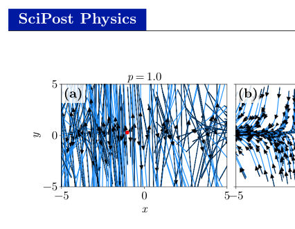
<figcaption class="paper-figure-caption"><b>Fig 3.</b> Figure 3: Trajectories of the fixed-point iteration for the map fx = 1 + 2x + ηy and fy = 1 −2y + ηx with η = 0.1 for different starting points (x0, y0) with x0, y0 ∈(−5, 5) and 40 iterations. In panel (a), the damping p = 1.0 leads to unstable directions along both eigenvectors u1 = (0.0250, −0.9997)T , u2 = (−0.9997, −0.0250)T . In panel (b), the damping p is set to 0.2 stabilizing the direction along u1 (associated with λ1 = −2.0025). Application of the stabilization method in panel (c) fixes the stability issues and allows for convergence of the fixed-point iteration to the correct solution (x∗, y∗) = (−1.03, 0.299) (red dot).</figcaption>
</figure>
<figure class="paper-figure-card">
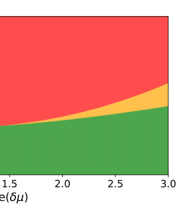
<figcaption class="paper-figure-caption"><b>Fig 4.</b> Figure 4: Stability phase space of the parquet formalism with damped iteration, Eq. (10), for the ZP model. Color scheme: In the green region, the fixed point is stable without damping (p = 1); in the orange region, it is unstable for p = 1 but curable by smaller p; in the red region, it is unstable and not curable by a smaller p. The vertex divergence, which only appears in the density channel at (Re(δµ) = 0, U = Im(δµ)2), is marked by a black square.</figcaption>
</figure>
<figure class="paper-figure-card">
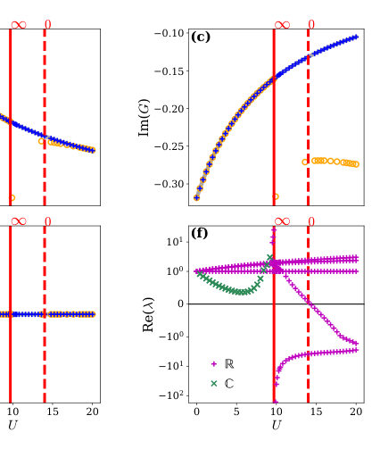
<figcaption class="paper-figure-caption"><b>Fig 5.</b> Figure 5: Parquet results for the ZP model with conventional iteration (orange ◦ denoted by p) and stabilized iteration (blue + denoted by P) for ph-symmetry (Re(δµ) = 0), where the red lines mark the instabilities (solid for vertex divergences and dashed for real eigenvalues that go through zero). The physical solution is shown as gray solid line. The starting point for each calculation is the physical fixed point at the previous U value and the damping p is determined by Eq. (13) with c = 0.1. In panels (a)–(e), the channels (d,m,G,s,t) are shown and in panel (f) the real part of eigenvalues of Π are shown, where purely real eigenvalues are marked by magenta + and complex eigenvalues are...</figcaption>
</figure>
</div>

<p><strong>Summary.</strong> This work addresses the numerical instability of the parquet equations used to calculate properties of strongly correlated electron systems like the Hubbard model. By analyzing the Jacobian spectrum, the authors provide a stabilization strategy that allows the iterative solution to converge to the correct physical fixed point even in highly non-perturbative regimes where standard methods fail.</p>
<p><strong>Why it may be interesting.</strong> The rigorous mathematical treatment of convergence failure in diagrammatic methods provides crucial insight into the non-perturbative physics of strongly correlated materials, which is central to modern condensed matter theory.</p>
<details>
<summary>Detailed structure</summary>
<p><strong>Main problem.</strong> The paper systematically analyzes the stability of the iterative solution of the parquet equations, which are used to solve for interacting many-body systems.</p>
<p><strong>Main result.</strong> The instability of the parquet iteration is not solely caused by divergences in the two-particle irreducible vertex, and a controlled stabilization strategy was introduced that successfully converges to the physical solution in deep non-perturbative regimes.</p>
<p><strong>Method.</strong> The analysis involves studying the spectrum of the Jacobian associated with the damped fixed-point iteration of the parquet equations, leading to a stabilization procedure.</p>
<p><strong>Model / system.</strong> The study applies to the Zero-point (ZP) model and the Hubbard atom (HA), which represents the strong-coupling limit of the Hubbard model. The formalism relies on diagrammatic techniques like the parquet equations.</p>
<p><strong>Key observables.</strong> Convergence issues, Jacobian eigenvalues, physical fixed point stability, and the two-particle irreducible vertex.</p>
<p><strong>Important parameters / regimes.</strong> Interaction strength (U), chemical potential deviation ($\delta\mu$), and the damping parameter ($p$).</p>
<p><strong>Assumptions / limitations.</strong> The analysis assumes the validity of the iterative fixed-point approach, though it shows this approach can fail due to local instabilities.</p>
<p><strong>Figures summary.</strong> Figures illustrate the stability phase space for the ZP model, comparing conventional iteration failure versus success using the stabilized method, and show convergence trajectories for coupled equations.</p>
<p><strong>Paper structure.</strong> The paper proceeds by analyzing the stability of the iterative solution, deriving stability criteria from the Jacobian spectrum, introducing a stabilization strategy, and finally applying this procedure to the ZP and HA models.</p>
</details>
<details>
<summary>Abstract</summary>
<p>We systematically analyze the stability of the iterative solution of the parquet equations by studying the spectrum of the Jacobian associated with the commonly used damped fixed-point iteration procedure. In this context, we provide an explicit criterion that determines when the physical fixed point of the parquet iteration becomes unstable. Importantly, we demonstrate that misleading convergence issues, observed in parquet calculation at intermediate-to-high interaction values, are not restricted to parameter regions where the two-particle irreducible vertex diverges, but can also arise in absence of vertex divergences. Hence, the misleading convergence issues of parquet-based algorithms are not directly caused by the crossings of two solutions of the (multivalued) Luttinger-Ward functional, that are associated with vertex divergences. Building on these insights, we introduce a controlled stabilization strategy that allows the convergence to the physical solution in the instability regimes. We apply this procedure to the zero-point model and the Hubbard model in the atomic limit, where we successfully stabilize the physical solution deep in the non-perturbative regime, even across multiple divergence lines.</p>
</details>
<p><sub><a href="#top">↑ back to top</a></sub></p>

<p><a id="paper-2606.05099"></a></p>
<h3 id="quantum-time-lower-bounds-by-permutation-invariance"><a href="http://arxiv.org/abs/2606.05099v1">Quantum Time Lower Bounds by Permutation Invariance</a></h3>
<p><strong>Authors:</strong> Qisheng Wang<br>
<strong>Type:</strong> theory · <strong>Category:</strong> quantum information and computing · <strong>PDF:</strong> <a href="https://arxiv.org/pdf/2606.05099v1">https://arxiv.org/pdf/2606.05099v1</a><br>
<strong>Analysis basis:</strong> full PDF text, analyzed in chunks
<strong>Topic relevance:</strong> <code>entanglement &amp; information structure</code> <strong>2/5</strong> · <code>quantum measurements</code> <strong>1/5</strong></p>
<div class="figure-strip-hint">↔ Scroll figures horizontally</div>
<div class="paper-figures-scroll">
<figure class="paper-figure-card">
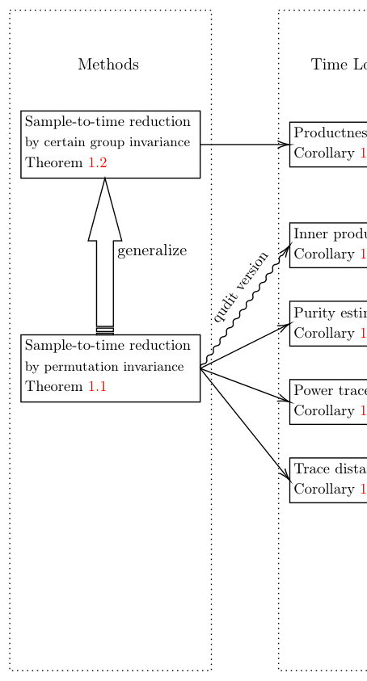
<figcaption class="paper-figure-caption"><b>Fig 1.</b> Figure 1: Diagram of relationships amongst our results.</figcaption>
</figure>
<figure class="paper-figure-card">
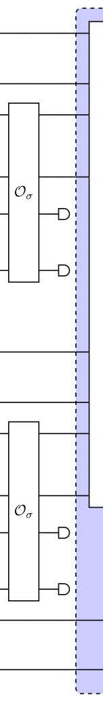
<figcaption class="paper-figure-caption"><b>Fig 2.</b> Figure 2: Quantum circuit for tester T .</figcaption>
</figure>
</div>

<p><strong>Summary.</strong> This paper introduces a systematic theoretical framework to derive tight lower bounds on the quantum time complexity required for quantum property testing. By reducing the problem to sample complexity bounds via permutation invariance, the authors prove time-optimality for several fundamental quantum estimation protocols, including purity and inner product estimation.</p>
<p><strong>Why it may be interesting.</strong> For a theoretical physicist, this work provides rigorous, systematic tools to quantify the fundamental computational limits (time vs. sample) for characterizing quantum states, which is crucial for designing efficient quantum measurements.</p>
<details>
<summary>Detailed structure</summary>
<p><strong>Main problem.</strong> The paper aims to establish systematic and tight lower bounds on the quantum time complexity (circuit size) required to test specific quantum properties of quantum states.</p>
<p><strong>Main result.</strong> A novel framework is introduced that relates the time complexity of testing permutation-invariant properties to the sample complexity of related, simpler problems, yielding time-optimality for several key quantum estimation protocols.</p>
<p><strong>Method.</strong> The core method involves reducing the problem of estimating a complex property $P_n$ to a known sample complexity lower bound $S(Q_m)$ via theorems based on permutation invariance and embeddability.</p>
<p><strong>Model / system.</strong> The analysis focuses on $n$-qubit quantum states ($
ho$) and their properties, such as purity ($   ext{tr}(
ho^2)$), inner products ($    ext{tr}(
ho\sigma)$), and productness. The framework is generalizable to qudits.</p>
<p><strong>Key observables.</strong> Quantum time complexity $T(P_n)$, quantum sample complexity $S(P_n)$, purity, inner product, and high-order power traces.</p>
<p><strong>Important parameters / regimes.</strong> The error parameter ($\epsilon$), the number of qubits ($n$), and the ratio $R$ derived from the structure of the property are crucial parameters.</p>
<p><strong>Assumptions / limitations.</strong> The results heavily rely on the assumption that the properties being tested exhibit permutation invariance, allowing the use of the derived reduction theorems.</p>
<p><strong>Figures summary.</strong> Figures summarize the relationships between the derived time-optimality results for various quantum algorithmic tools.</p>
<p><strong>Paper structure.</strong> The paper develops a theoretical framework using theorems (like Theorem 1.1 and 1.2) to relate time and sample complexity. It then applies this framework to derive specific, time-optimal lower bounds for protocols like the SWAP test, Shift test, and samplizer.</p>
</details>
<details>
<summary>Abstract</summary>
<p>Tight bounds on quantum sample complexity and quantum query complexity have been known for various computational problems in the literature, whereas tight bounds on quantum time complexity (i.e., the size of quantum circuits) remain unresolved. In this paper, we provide a framework to establish lower bounds on the quantum time complexity for testing permutation-invariant properties of quantum states, via a reduction from quantum sample complexity. As an application, we obtain a series of matching lower bounds when given sample access to the input quantum states, including:   1. The SWAP test due to Buhrman, Cleve, Watrous, and de Wolf (Phys. Rev. Lett. 2001) is time-optimal to estimate the purity $\operatorname{tr}(ρ^2)$ and the inner product $\operatorname{tr}(ρσ)$.   2. The Shift test due to Ekert, Alves, Oi, Horodecki, Horodecki, and Kwek (Phys. Rev. Lett. 2002) is time-optimal to estimate the high-order functionals $\operatorname{tr}(ρ^k)$.   3. The productness tester for multipartite pure states due to Harrow and Montanaro (J. ACM 2013) is time-optimal.   4. The LMR protocol due to Lloyd, Mohseni, and Rebentrost (Nat. Phys. 2014) is time-optimal to implement the reflection operator about a pure state.   5. The samplizer due to Wang and Zhang (IEEE Trans. Inf. Theory 2025) is time-optimal for pure states.   6. The estimator for pure-state trace distance and fidelity due to Wang and Zhang (ICALP 2026) is time-optimal.   To the best of our knowledge, this is the first method that allows us to systematically establish tight lower bounds on quantum time complexity.</p>
</details>
<p><sub><a href="#top">↑ back to top</a></sub></p>

<p><a id="paper-2606.04763"></a></p>
<h3 id="imaginarity-witness"><a href="http://arxiv.org/abs/2606.04763v1">Imaginarity witness</a></h3>
<p><strong>Authors:</strong> Zhiqi Liang, Yufan Lin, Yu Guo, Yuqi Sun<br>
<strong>Type:</strong> theory · <strong>Category:</strong> quantum information and computing · <strong>PDF:</strong> <a href="https://arxiv.org/pdf/2606.04763v1">https://arxiv.org/pdf/2606.04763v1</a><br>
<strong>Analysis basis:</strong> full PDF text, analyzed in chunks
<strong>Topic relevance:</strong> <code>entanglement &amp; information structure</code> <strong>2/5</strong></p>
<div class="figure-strip-hint">↔ Scroll figures horizontally</div>
<div class="paper-figures-scroll">
<figure class="paper-figure-card">
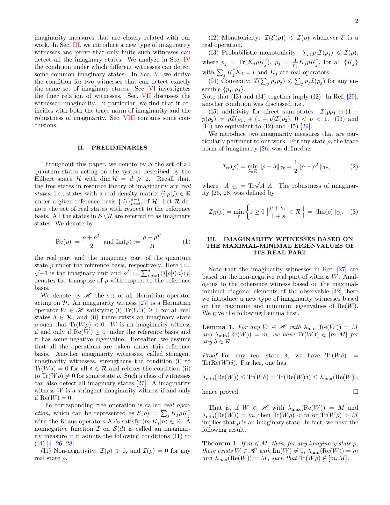
<figcaption class="paper-figure-caption"><b>Fig 1.</b> Low-resolution page preview, page 2</figcaption>
</figure>
<figure class="paper-figure-card">
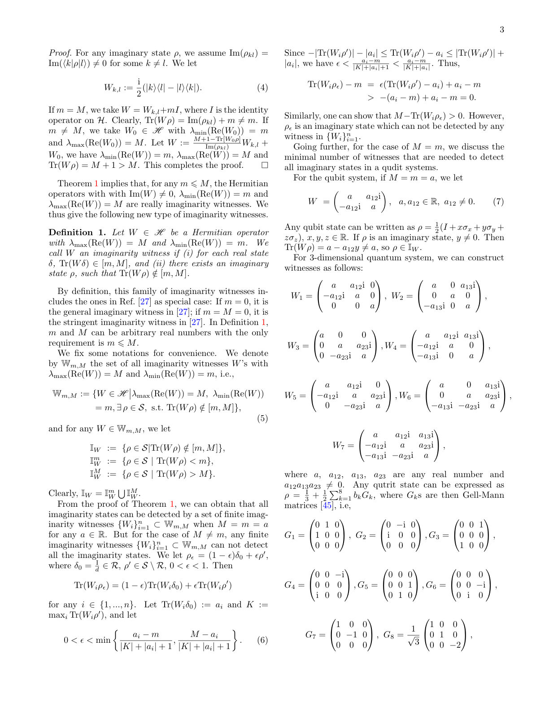
<figcaption class="paper-figure-caption"><b>Fig 2.</b> Low-resolution page preview, page 3</figcaption>
</figure>
<figure class="paper-figure-card">
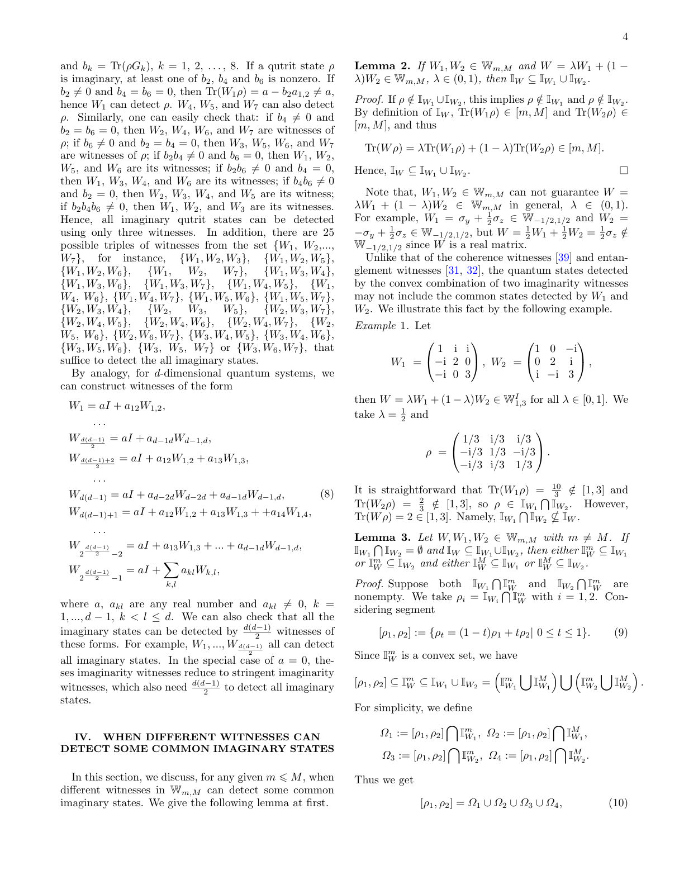
<figcaption class="paper-figure-caption"><b>Fig 3.</b> Low-resolution page preview, page 4</figcaption>
</figure>
<figure class="paper-figure-card">
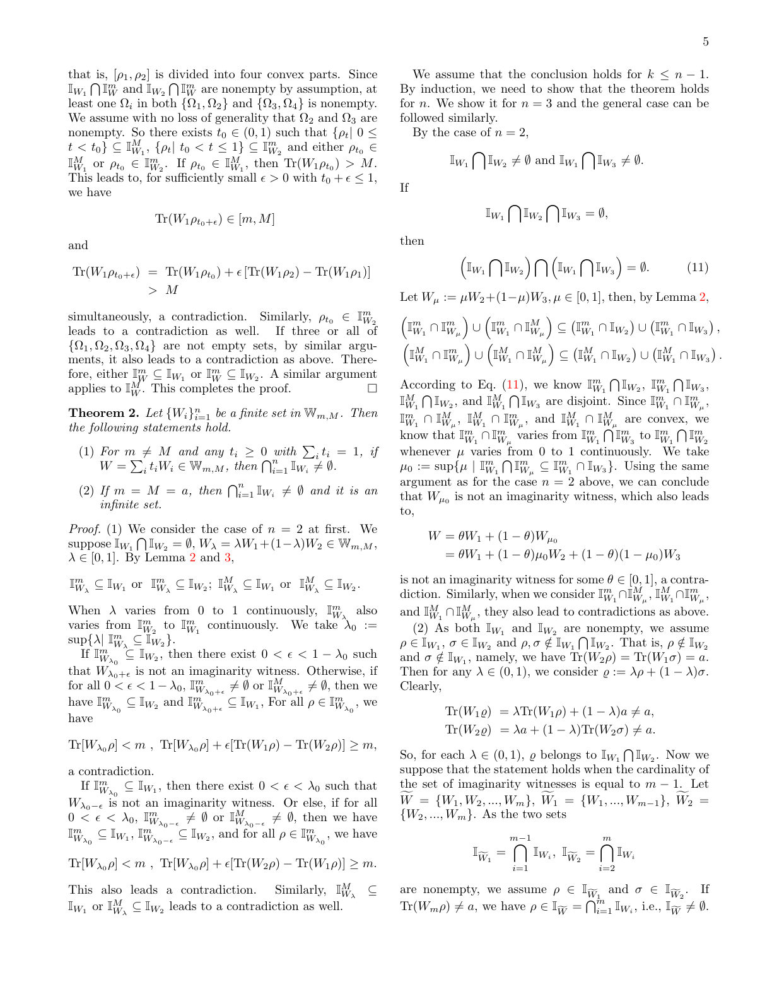
<figcaption class="paper-figure-caption"><b>Fig 4.</b> Low-resolution page preview, page 5</figcaption>
</figure>
<figure class="paper-figure-card">
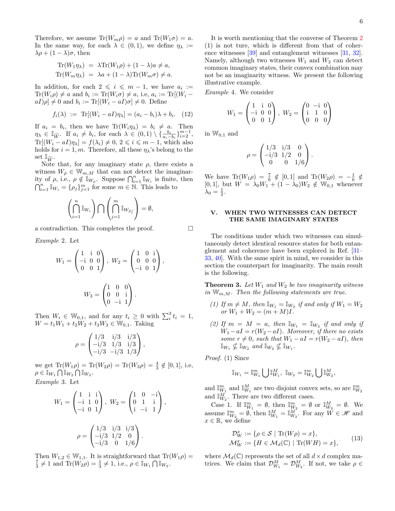
<figcaption class="paper-figure-caption"><b>Fig 5.</b> Low-resolution page preview, page 6</figcaption>
</figure>
</div>

<p><strong>Summary.</strong> This paper introduces 'imaginarity witnesses' as a new tool to quantify the imaginary component of quantum states. It establishes a theoretical framework showing that the resulting 'witnessed imaginarity' measure is mathematically equivalent to both the trace norm and the robustness of imaginarity. This advances the understanding of quantum resource theory by providing a concrete diagnostic tool for imaginary quantum features.</p>
<p><strong>Why it may be interesting.</strong> It provides a rigorous, operational framework for quantifying a specific non-classical feature (imaginarity) of quantum states, drawing direct parallels to well-established concepts like entanglement and coherence witnesses.</p>
<details>
<summary>Detailed structure</summary>
<p><strong>Main problem.</strong> The paper develops and analyzes a new class of 'imaginarity witnesses' to characterize and detect imaginary quantum states, extending resource theories like entanglement and coherence.</p>
<p><strong>Main result.</strong> The authors prove that a newly defined 'witnessed imaginarity' measure coincides with both the trace norm of imaginarity and the robustness of imaginarity.</p>
<p><strong>Method.</strong> The methodology involves defining witnesses based on the maximum and minimum eigenvalues of the real part of the witness operator, and then analyzing the geometric relationships between the sets of detectable states.</p>
<p><strong>Model / system.</strong> The study concerns quantum states (density matrices $
ho$) acting on a Hilbert space of dimension $d \ge 2$. The analysis uses specific examples like qubits and qutrits.</p>
<p><strong>Key observables.</strong> Imaginarity witness ($W$), Imaginarity measure ($  ext{IW}(
ho)$), Trace norm of imaginarity ($  ext{Itr}(
ho)$), and Robustness of imaginarity ($  ext{IR}(
ho)$).</p>
<p><strong>Important parameters / regimes.</strong> The minimum ($m$) and maximum ($M$) eigenvalues of $    ext{Re}(W)$ define the detection interval $[m, M]$.</p>
<p><strong>Assumptions / limitations.</strong> The analysis builds upon the established framework of quantum resource theories and assumes the existence of a reference basis for defining real states.</p>
<p><strong>Paper structure.</strong> The paper introduces the concept of imaginarity witnesses, derives new classes of witnesses ($W_{m,M}$), analyzes the relationships between different witnesses (equality and inclusion of detection sets), and culminates in proving the equivalence of the defined imaginarity measure with known quantities.</p>
</details>
<details>
<summary>Abstract</summary>
<p>Imaginarity has shown to be an important resource in quantum information. The witness theory of quantum resource, such as entanglement witness, coherence witness, and imaginarity witness, has been established, in particular entanglement witness and coherence witness have been extensively explored. We present here another class of imaginarity witnesses beyond the one in [{Phys. Lett. A} \textbf{530}, 130135 (2025)]. Within our framework, any nonreal Hermitian operator under the reference basis is an imaginarity witness and only finite of them can detect all the imaginarity states. As the common approaches that were explored in the witness theories of entanglement and coherence, we then explore the relations between these imaginarity witnesses in different cases: (i) when they can detect common imaginary states, (ii) when they can detect the same sets of imaginary states, and (ii) when they obey the finer relation. Finally, we define an imaginarity measure in terms of witnesses, termed witnessed imaginarity, and prove that it coincides with both the trace norm of imaginarity and the robustness of imaginarity.</p>
</details>
<p><sub><a href="#top">↑ back to top</a></sub></p>

<p><a id="paper-2606.04748"></a></p>
<h3 id="percolation-criticality-of-amorphous-amorphous-transitions-in-compressed-glasses"><a href="http://arxiv.org/abs/2606.04748v1">Percolation Criticality of Amorphous-Amorphous Transitions in Compressed Glasses</a></h3>
<p><strong>Authors:</strong> Julien Perradin, Simona Ispas, Ricardo V. Paredes, Anwar Hasmy, Bernard Hehlen<br>
<strong>Type:</strong> theory · <strong>Category:</strong> disordered systems and neural networks · <strong>PDF:</strong> <a href="https://arxiv.org/pdf/2606.04748v1">https://arxiv.org/pdf/2606.04748v1</a><br>
<strong>Analysis basis:</strong> full PDF text, analyzed in chunks
<strong>Topic relevance:</strong> <code>non-equilibrium universality</code> <strong>2/5</strong></p>
<div class="figure-strip-hint">↔ Scroll figures horizontally</div>
<div class="paper-figures-scroll">
<figure class="paper-figure-card">
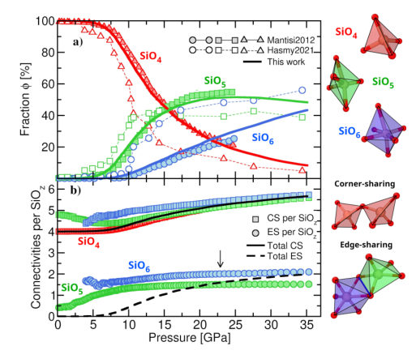
<figcaption class="paper-figure-caption"><b>Fig 1.</b> FIG. 1: a) Fraction ϕ of SiOZ polyhedra: SiO4 (red), SiO5 (green), and SiO6 (blue). The data extracted from the present work (bold lines) are compared to those extracted from classical MD simulations (colored symbols and continuous lines) reported by Mantisi et al.39 and DFTB14 (open symbols and dashed lines) MD studies. b) Corner- and edge-sharing connectivities per SiOZ. The arrow indicates the pressure at which the number of ES bonds equals two, as in crystalline stishovite40.</figcaption>
</figure>
<figure class="paper-figure-card">

<figcaption class="paper-figure-caption"><b>Fig 2.</b> Figure 2a shows various snapshots of the structural evolution upon compression of the SHIK glass within the bonded approach. Isolated SiO5 pentahedra (green boxes) appear at low pressure and progressively replace SiO4 (red boxes) in the silica network. They form</figcaption>
</figure>
<figure class="paper-figure-card">
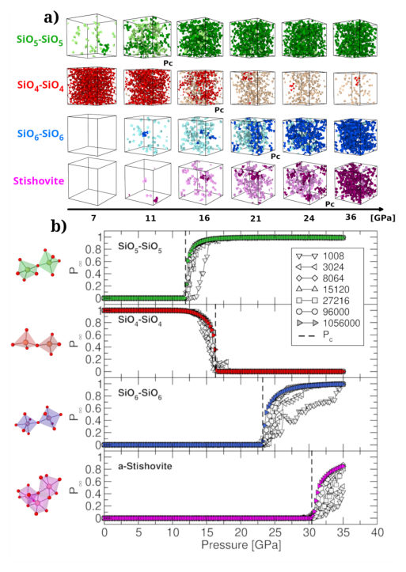
<figcaption class="paper-figure-caption"><b>Fig 3.</b> FIG. 2: a) Snapshots of pressurization of an a-SiO2 sample of 3024 atoms. Lighter colors label small SiOz-SiOz clusters and darker colors correspond to the biggest cluster (green shades are SiO5-SiO5, red are SiO4-SiO4, blue are SiO6-SiO6, and purple are stishovite (SiO6 connected by ES)). b) Percolation order parameter P∞of SiOz-SiOz and a-stishovite clusters as a function of pressure for each simulation box size L. The critical pressure pc (dashed lines) corresponds to the maximum of the correlation function ξ(p).</figcaption>
</figure>
<figure class="paper-figure-card">
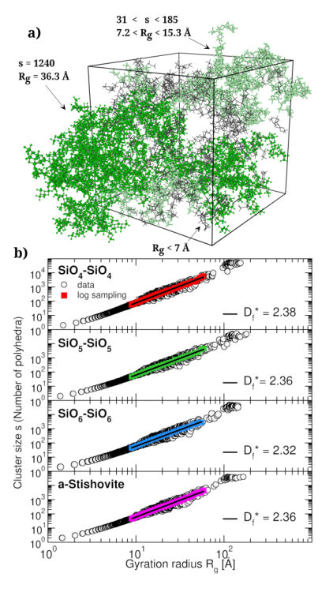
<figcaption class="paper-figure-caption"><b>Fig 4.</b> FIG. 3: Gyration radius Rg of SiOz polyhedra clusters at the critical pressure pc. a) Snapshot of unwrapped SiO5-SiO5 clusters at the critical point (27k atoms) as an illustration. Light green and dark green colors highlight clusters of increasing gyration radius. Clusters whose Rg is inferior to 7 ˚A are shown in gray. b) log-log plot of s versus Rg in the SiOz-SiOz and stishovite clusters. Open black circles are the raw data, and colored squares are the log-sampled data obtained by dividing the x-range into 30 logarithmically spaced bins, then averaging the y-values (and propagating errors) within each bin, using bin centers as the new x-coordinates, and discarding empty bins. Black lines...</figcaption>
</figure>
<figure class="paper-figure-card">

<figcaption class="paper-figure-caption"><b>Fig 5.</b> FIG. 4: a) a-SiO2 and b) a-H2O. Circles refer to the order parameter P∞and dashed lines to fractions ϕ. LD stands for Z = 4, HD for Z = 4-7, and VHD for Z ≥8.</figcaption>
</figure>
</div>

<p><strong>Summary.</strong> This work uses molecular dynamics and percolation theory to study how structural connectivity changes in compressed amorphous glasses like $   ext{SiO}_2$. By comparing bonded and non-bonded structural analyses, the authors map out sequential percolation transitions corresponding to the formation of different structural motifs ($   ext{SiO}_4,     ext{SiO}_5,     ext{SiO}_6$). The findings suggest that these transitions are governed by a mechanism distinct from simple random percolation, hinting at topological or rigidity effects.</p>
<p><strong>Why it may be interesting.</strong> While focused on condensed matter physics, the rigorous application of percolation theory and scaling laws to characterize structural phase transitions in disordered systems provides a powerful, generalizable framework for understanding connectivity and rigidity in complex materials, which has parallels in analyzing network dynamics in quantum many-body systems.</p>
<details>
<summary>Detailed structure</summary>
<p><strong>Main problem.</strong> The paper investigates the percolation criticality associated with amorphous-amorphous structural transitions in compressed glasses, specifically $   ext{SiO}_2$ and $   ext{H}_2    ext{O}$. It aims to understand the underlying physical mechanism governing these structural changes.</p>
<p><strong>Main result.</strong> The study reveals critical percolation transitions for various structural motifs ($    ext{SiO}_2$-$   ext{SiO}_2$ clusters, $ ext{SiO}_6$-$   ext{SiO}_6$ clusters) whose critical exponents suggest a possible rigidity percolation mechanism, deviating from standard random correlation models.</p>
<p><strong>Method.</strong> The research employs large-scale molecular dynamics simulations combined with percolation theory, utilizing cluster analysis (e.g., Union-Find algorithm) and finite-size scaling methods to determine critical exponents and transition pressures.</p>
<p><strong>Model / system.</strong> The primary systems are compressed amorphous silica ($  ext{a-SiO}_2$) and amorphous water ($ ext{a-H}_2  ext{O}$). The analysis compares 'bonded' models (based on polyhedral connectivity like $    ext{SiO}_4$ tetrahedra) with 'non-bonded' models (based on coordination numbers like $  ext{OOZ}$ or $  ext{SiSiZ}$ clusters).</p>
<p><strong>Key observables.</strong> Percolation order parameter ($P_\infty$), correlation length ($\xi$), average cluster size ($\langle S 
angle$), critical exponents ($
u, eta, \gamma,    au$), and fractal dimension ($D_f^*$).</p>
<p><strong>Important parameters / regimes.</strong> Pressure (ranging from 0 to 35 GPa), coordination number ($Z$), and system size ($10^6$ atoms).</p>
<p><strong>Assumptions / limitations.</strong> The analysis relies on the applicability of scaling laws near the critical point and assumes that structural transitions can be mapped onto percolation phenomena.</p>
<p><strong>Figures summary.</strong> Figures illustrate the pressure dependence of correlation length and cluster size, showing power-law scaling near critical points, and demonstrate data collapse using Finite Size Scaling (FSS) ansatz for various cluster types.</p>
<p><strong>Paper structure.</strong> The paper systematically compares results from bonded and non-bonded approaches, mapping out sequential percolation transitions ($ ext{SiO}_4  o   ext{SiO}_5  o   ext{SiO}_6$) as pressure increases, and applying rigorous scaling analysis to quantify the critical behavior.</p>
</details>
<details>
<summary>Abstract</summary>
<p>The low-to-high-density transition in compressed silica glass is investigated using percolation theory. Large-scale molecular dynamics simulations of SiO$_2$ glasses, with system sizes of up to 10$^6$ atoms and pressures ranging from 0 to 35 GPa, were carried out to investigate the emergence of structural motifs and their growth to system-spanning length scales under compression. On this basis, we introduced long-range descriptors that complement conventional local and medium-range structural measures. The results reveal critical percolation transitions of SiO$_Z$-SiO$_Z$ clusters with increasing coordination number $Z$. The critical exponents slightly deviate from the standard (random) correlation, a behavior that seems to be more pronounced for higher coordinated polyhedra than for tetrahedra, suggesting a possible rigidity percolation mechanism. SiSi$_z$-SiSi$_z$ clusters were also analyzed using the non-bonded approach. Bonded and non-bonded approaches complement each other in a particularly illuminating way for describing pressure-induced structural transformations and common mechanisms shared by bonded glasses, such as SiO$_2$, and non-bonded glasses, such as amorphous ice.</p>
</details>
<p><sub><a href="#top">↑ back to top</a></sub></p>

<p><a id="paper-2606.04363"></a></p>
<h3 id="robust-steerability-classification-via-key-feature-extraction-and-matrix-structure-preservation"><a href="http://arxiv.org/abs/2606.04363v1">Robust Steerability Classification via Key Feature Extraction and Matrix Structure Preservation</a></h3>
<p><strong>Authors:</strong> Yutao Xin, Huixian Meng, Zhongyan Li, Pu Wang<br>
<strong>Type:</strong> theory · <strong>Category:</strong> quantum information and computing · <strong>PDF:</strong> <a href="https://arxiv.org/pdf/2606.04363v1">https://arxiv.org/pdf/2606.04363v1</a><br>
<strong>Analysis basis:</strong> full PDF text, analyzed in chunks
<strong>Topic relevance:</strong> <code>entanglement &amp; information structure</code> <strong>2/5</strong></p>
<div class="figure-strip-hint">↔ Scroll figures horizontally</div>
<div class="paper-figures-scroll">
<figure class="paper-figure-card">

<figcaption class="paper-figure-caption"><b>Fig 1.</b> Fig. 1. Baseline comparison of different classifiers using F1 and F2. (a) Cross-validation accuracy on random states. (b) Test accuracy on random states. (c) Prediction accuracy on Werner states. The detailed numerical values are listed in the Appendix A.</figcaption>
</figure>
<figure class="paper-figure-card">

<figcaption class="paper-figure-caption"><b>Fig 2.</b> Fig. 2. Prediction accuracies on T-diagonal states under two and three measurement settings. (a) Results based on F1. (b) Results based on F2. The three bars in each clas- sifier group correspond to two-measurement steerable states, two-measurement unsteerable states, and three-measurement steerable states, respectively.</figcaption>
</figure>
<figure class="paper-figure-card">

<figcaption class="paper-figure-caption"><b>Fig 3.</b> Fig. 3. Prediction accuracies of the F2-based models on strictly unsteerable random states under different measure- ment settings.</figcaption>
</figure>
<figure class="paper-figure-card">

<figcaption class="paper-figure-caption"><b>Fig 4.</b> Fig. 4. Prediction accuracies on AVN states under the two- measurement setting.</figcaption>
</figure>
<figure class="paper-figure-card">

<figcaption class="paper-figure-caption"><b>Fig 5.</b> Fig. 5. CNN-F2 prediction of steering boundaries for axially symmetric states.</figcaption>
</figure>
</div>

<p><strong>Summary.</strong> This work develops robust machine learning methods to classify quantum steerability, a key measure of quantum correlation. By recognizing that standard feature vectorization loses crucial information, the authors introduce CNNs that process the full matrix structure of the quantum state. The resulting model achieves state-of-the-art robustness, allowing for the prediction of measurement requirements for detecting steerability.</p>
<p><strong>Why it may be interesting.</strong> It provides advanced machine learning techniques (CNNs on structured data) to tackle fundamental questions in quantum correlation theory, which is highly relevant to quantum information processing and characterization.</p>
<details>
<summary>Detailed structure</summary>
<p><strong>Main problem.</strong> The paper addresses the challenge of creating robust quantum steerability classifiers that can generalize accurately across various challenging quantum states.</p>
<p><strong>Main result.</strong> The most robust classification performance is achieved by simultaneously extracting key features and preserving the intrinsic matrix structure of the quantum state using Convolutional Neural Networks (CNNs).</p>
<p><strong>Method.</strong> The authors compare various machine learning models (SVM, MLP, CNN) trained on different feature representations (F1, F2) derived from quantum state density matrices.</p>
<p><strong>Model / system.</strong> The study analyzes quantum steerability, an asymmetric correlation measure between quantum systems, using density matrices ($
ho_{AB}$) for two-qubit states. The classification is tested on specific state families, including Werner, T-diagonal, and All-Versus-Nothing (AVN) states.</p>
<p><strong>Key observables.</strong> Classification accuracy (%) on random and Werner states, and the prediction accuracy of the minimum number of projective measurements required to detect steerability.</p>
<p><strong>Important parameters / regimes.</strong> The number of projective measurements ($m$), the feature sets ($F_1, F_2$), and the CNN hyperparameters (e.g., learning rate, kernel size).</p>
<p><strong>Assumptions / limitations.</strong> The primary assumption challenged is that flattening quantum states into 1D vectors destroys essential matrix structure, necessitating the use of CNNs on matrix-structured features.</p>
<p><strong>Figures summary.</strong> Figures compare classification accuracies of various models (SVM, CNN) on random and Werner states, and show the successful prediction of steerability boundaries for axially symmetric states.</p>
<p><strong>Paper structure.</strong> The paper progresses by first establishing the limitations of basic classifiers on challenging states, then introducing key feature extraction, and finally achieving the best results by integrating feature extraction with matrix structure preservation via CNNs, culminating in an application to measurement prediction.</p>
</details>
<details>
<summary>Abstract</summary>
<p>Generalization ability is essential for assessing the robustness of quantum steerability classifiers. In this work, we investigate robust steerability classification from the perspective of key feature extraction and matrix structure preservation. The dataset introduced in Phys. Rev. A 100, 022314 (2019) provides the training basis for the present work. With strictly unsteerable random states, T-diagonal states, and All-Versus-Nothing (AVN) states, we evaluate the generalization performance of support vector machines (SVMs), multilayer perceptrons (MLPs), and deep perceptron control classifiers(DPs) trained on full-information features. None of these classifiers perform consistently on T-diagonal or AVN states. Given that stochastic local operations and classical communication and local unitary transformations preserve steerability, we introduce a key feature that determines steerability. SVMs trained on this feature overcome the instability on T-diagonal states but still fail on AVN states. Moreover, this feature alone is insufficient for training robust neural-network-based steerability classifiers. Recognizing that flattening quantum states into one-dimensional vectors may destroy their intrinsic matrix structure, we introduce matrix versions of both features and train convolutional neural networks on them. The most robust overall performance among the tested classifiers is achieved only when the matrix structure is preserved and key features are extracted simultaneously. Finally, as an application, we employ the most robust classifiers to predict the number of projective measurements required to detect the steerability of axially symmetric states</p>
</details>
<p><sub><a href="#top">↑ back to top</a></sub></p>

<p><a id="paper-2606.04487"></a></p>
<h3 id="anisotropic-rabi-model-as-a-noise-biased-qubit"><a href="http://arxiv.org/abs/2606.04487v1">Anisotropic Rabi Model as a Noise Biased Qubit</a></h3>
<p><strong>Authors:</strong> Jia-Wen Yu, Ke-Xiong Yan, Yuan Qiu, Yiming Yu, Yexiong Zeng, Adam Miranowicz, Zhi-Cheng Shi, Ye-Hong Chen, Yan Xia, Franco Nori<br>
<strong>Type:</strong> theory · <strong>Category:</strong> quantum information and computing · <strong>PDF:</strong> <a href="https://arxiv.org/pdf/2606.04487v1">https://arxiv.org/pdf/2606.04487v1</a><br>
<strong>Analysis basis:</strong> full PDF text, analyzed in chunks
<strong>Topic relevance:</strong> <code>Keldysh / 2PI / non-Gaussian methods</code> <strong>1/5</strong> · <code>Tavis-Cummings &amp; cavity-many-emitter</code> <strong>1/5</strong> · <code>analog quantum simulation</code> <strong>1/5</strong> · <code>correlated / nonlocal dissipation</code> <strong>1/5</strong> · <code>correlated cavity matter</code> <strong>1/5</strong> · <code>driven-dissipative phase transition</code> <strong>1/5</strong> · <code>methods for driven-dissipative</code> <strong>1/5</strong> · <code>non-equilibrium dynamics</code> <strong>1/5</strong></p>
<div class="figure-strip-hint">↔ Scroll figures horizontally</div>
<div class="paper-figures-scroll">
<figure class="paper-figure-card">

<figcaption class="paper-figure-caption"><b>Fig 1.</b> FIG. 1. Model diagram of the ARM. In the weak coupling regime, the ground and first excited states are separated by an energy gap of approximately ∆−ω. As the coupling strength increases to the USC and DSC regimes, this gap progressively decreases, and the two levels become nearly degenerate. Here, ω denotes the frequency of the bosonic mode, and ∆represents the energy splitting between the two atomic levels.</figcaption>
</figure>
<figure class="paper-figure-card">

<figcaption class="paper-figure-caption"><b>Fig 2.</b> FIG. 2. Variation of all noise sensitivities with increasing coupling strength g for different anisotropy parameters η. Panels (a-d) correspond to energy relaxation, where Sp σx = Sp σy = Sp X = Sp Y ≈0, while panels (e,f) correspond to pure dephasing, where Sr σz = Sr a†a ≈0.</figcaption>
</figure>
<figure class="paper-figure-card">

<figcaption class="paper-figure-caption"><b>Fig 3.</b> FIG. 3. (a) Indicator ∆ρ as a function of the anisotropy parameter η and the coupling strength g. By tuning η, the noise robustness can be enhanced, even at a fixed coupling strength g. Here, γ/ω = γp/ω = 10−3, ωT = 5, and θ = π 4 , ϕ = 0 for |Φ0⟩.(b) Relaxation process ρ11(t) and (c) pure dephasing process ρ10(t). Here, g = 5ω, γ/ω = γp/ω = 10−3, γσy,Y = 10−2γ and θ = π 4 , ϕ = 0 for |Φ0⟩. (d) Average logical fidelity F(t) during the evolution, defined by F(t) = R 2π 0 R π/2 0 F(θ, ϕ, t) 2 sin(2θ) dθdϕ/ R 2π 0 R π/2 0 2 sin(2θ) dθdϕ. Here, g = 3ω, γ/ω = γp/ω = 10−2, and γσy,Y = 10−2γ.</figcaption>
</figure>
<figure class="paper-figure-card">

<figcaption class="paper-figure-caption"><b>Fig 4.</b> FIG. 4. Influence of external noise on the operational performance of different gate types. For the code space defined by η = −0.5, the corresponding gate operations are robust against σx-type noise but remain sensitive to σy-type noise. Owing to the near-degeneracy of the logical states {|0L⟩, |1L⟩} in the USC/DSC regimes, the σz-type noise has only a negligible effect on gate performance, with its impact approaching zero. Here we set g = 5ω and ωt = 1.</figcaption>
</figure>
</div>

<p><strong>Summary.</strong> This paper treats the anisotropic Rabi model as a resource for building a noise-biased qubit. By tuning the anisotropy parameter $\eta$, researchers can selectively suppress environmental decoherence pathways. This engineering capability leads to logical qubits with enhanced coherence times and robust quantum gates, advancing the feasibility of quantum computation in strongly coupled regimes.</p>
<p><strong>Why it may be interesting.</strong> This work directly addresses the critical challenge of decoherence in strongly coupled quantum systems by providing a tunable Hamiltonian parameter ($\eta$) to engineer intrinsic noise protection, which is highly relevant for building scalable quantum processors.</p>
<details>
<summary>Detailed structure</summary>
<p><strong>Main problem.</strong> The paper investigates using the quantum anisotropic Rabi model (ARM) to engineer a noise-biased qubit capable of protecting quantum information against environmental decoherence.</p>
<p><strong>Main result.</strong> Tuning the anisotropy parameter ($\eta$) allows for the selective suppression of dominant decoherence pathways, leading to logical qubits with enhanced coherence times and robust gate operations.</p>
<p><strong>Method.</strong> The analysis involves deriving noise susceptibilities ($S_r, S_p$) and quantifying noise bias ($\Delta
ho$) by comparing the ARM dynamics to the isotropic case, using master equations.</p>
<p><strong>Model / system.</strong> The system is the quantum anisotropic Rabi model, describing an atom coupled to a bosonic field. The dynamics are analyzed in the ultrastrong and deep-strong coupling regimes, utilizing a master equation approach.</p>
<p><strong>Key observables.</strong> Coherence times, noise susceptibilities ($S_r, S_p$), noise bias ($\Delta
ho$), and gate fidelity ($f$).</p>
<p><strong>Important parameters / regimes.</strong> The anisotropy parameter $\eta$ is the key control knob, which tunes the relative strengths of rotating-wave and counter-rotating-wave interactions.</p>
<p><strong>Assumptions / limitations.</strong> The analysis relies on defining logical states within the ground and first excited state subspace, and some perturbative treatments are noted to break down in the deepest coupling regimes.</p>
<p><strong>Figures summary.</strong> Figure 1 illustrates the energy gap variation in the weak coupling regime. Figure 2 shows how noise sensitivities vary with coupling strength ($g$) for different $\eta$ values, demonstrating $\eta$'s control over coupling imbalance.</p>
<p><strong>Paper structure.</strong> The paper progresses from defining the ARM and its Hamiltonian, to analyzing noise susceptibility in various coupling regimes, demonstrating how $\eta$ controls decoherence, and finally constructing and testing universal, noise-robust gate operations within the logical subspace.</p>
</details>
<details>
<summary>Abstract</summary>
<p>We present the quantum anisotropic Rabi model as a potential resource for a noise biased qubit. The system-environment coupling can be biased by tuning the relative strengths of the rotating-wave and counter-rotating-wave interactions, characterized by the anisotropy parameter $η$. This anisotropy selectively suppresses dominant decoherence pathways, thereby enabling the construction of a protected logical qubit in the ultrastrong and deep-strong coupling regimes. The logical states (formed by the ground and first excited states of the anisotropic Rabi model) possess coherence times that are enhanced compared to the isotropic case. Moreover, we construct a set of universal gate operations within the logical-state subspace and demonstrate that the gate operations associated with different values of $η$ exhibit robustness against external noise. These findings are expected to inspire applications and research directions for the anisotropic Rabi model with promising potential impacts.</p>
</details>
<p><sub><a href="#top">↑ back to top</a></sub></p>

<p><a id="paper-2606.04835"></a></p>
<h3 id="reconciliation-of-effective-hamiltonians-for-intense-light-matter-interaction"><a href="http://arxiv.org/abs/2606.04835v1">Reconciliation of effective Hamiltonians for intense light-matter interaction</a></h3>
<p><strong>Authors:</strong> Jakob Nicolai Bruhnke, Jan Marcus Dahlström<br>
<strong>Type:</strong> theory · <strong>Category:</strong> other · <strong>PDF:</strong> <a href="https://arxiv.org/pdf/2606.04835v1">https://arxiv.org/pdf/2606.04835v1</a><br>
<strong>Analysis basis:</strong> full PDF text, analyzed in chunks
<strong>Topic relevance:</strong> <code>Keldysh / 2PI / non-Gaussian methods</code> <strong>1/5</strong> · <code>Tavis-Cummings &amp; cavity-many-emitter</code> <strong>1/5</strong> · <code>analog quantum simulation</code> <strong>1/5</strong> · <code>correlated cavity matter</code> <strong>1/5</strong> · <code>driven-dissipative phase transition</code> <strong>1/5</strong> · <code>methods for driven-dissipative</code> <strong>1/5</strong> · <code>non-equilibrium dynamics</code> <strong>1/5</strong></p>
<div class="figure-strip-hint">↔ Scroll figures horizontally</div>
<div class="paper-figures-scroll">
<figure class="paper-figure-card">

<figcaption class="paper-figure-caption"><b>Fig 1.</b> Figure 1. Properties of the minimal model Hamiltonian H (solid) of Eq. (45), compared with the effective Hamiltonians H(∞) AMP (dashed-dotted), H(3) RS (dashed), and H(5) RS (dotted). Panel (a) shows the dressed energy E+ against field strength E0. Panel (b) depicts the effective asymmetry defined in Eq. (49) against E0. Panel (c) shows the populations of the GS (yellow), ES (blue) and the sum of the Q-space populations (green).</figcaption>
</figure>
<figure class="paper-figure-card">

<figcaption class="paper-figure-caption"><b>Fig 2.</b> Figure 2. Quasi-energies E −iΓ/2 of Rubidium in a monochromatic, linearly polarized IR field. The upper row shows the real part of the quasi-energies, E; the lower row shows the decay rate Γ. The black solid lines are exact calculations obtained from Floquet theory. In the left column, the exact quasi-energies are compared to the effective Hamiltonian from QD-RSPT in 7th order (red dotted), see Eq. (21). In the middle column, we compare the exact solution to the effective Hamiltonian from QD-RSPT within the pole approximation in 4th order (blue dashed), see Eq. (39). In the middle column, we compare the exact solution to the effective Hamiltonian from adiabatic elimination in 4th order...</figcaption>
</figure>
<figure class="paper-figure-card">

<figcaption class="paper-figure-caption"><b>Fig 3.</b> Figure 3. Quasi-energies E± −iΓ±/2 of Helium in a monochro- matic, linearly polarized XUV field, resonant with the 1s2 ↔ 1s3p transition. Panel (a) shows the real part of the quasi- energies, E±, and panel (b) the decay rate Γ±. The black solid lines are exact calculations obtained from Floquet the- ory. We compare the exact quasi-energies to the effective Hamiltonian from RSPT in 10th order (yellow dashed), see Eq. (21), and to the AMP effective Hamiltonian in 10th order (blue dotted), see Eq. (34) (since the field is exactly degen- erate, HAMP = HQD-AMP). We label the dressed states as ∣+⟩ and ∣−⟩. In panel (c), we show the asymmetry of the Hamilto- nian, where the asymmetry is defined in...</figcaption>
</figure>
</div>

<p><strong>Summary.</strong> This paper addresses the limitations of standard effective Hamiltonian methods when modeling light-matter interactions under intense laser fields. The authors introduce Quasi-degenerate Rayleigh-Schrödinger perturbation theory (QD-RSPT) as a superior, systematic approach. QD-RSPT accurately describes complex phenomena like non-orthogonal eigenstates and asymmetric coupling, providing a new state-of-the-art tool for strong-field quantum optics.</p>
<p><strong>Why it may be interesting.</strong> This work is highly relevant as it pushes the theoretical frontier in quantum optics by providing a systematic, high-intensity framework that correctly handles non-Hermiticity and state coupling asymmetries, which are critical for modern quantum control.</p>
<details>
<summary>Detailed structure</summary>
<p><strong>Main problem.</strong> The primary challenge is reconciling effective Hamiltonians used to describe quantum systems undergoing intense light-matter interaction, especially where standard approximations fail.</p>
<p><strong>Main result.</strong> The authors propose Quasi-degenerate Rayleigh-Schrödinger perturbation theory (QD-RSPT), which provides a robust framework that correctly accounts for non-orthogonal eigenstates and asymmetric coupling strengths at high intensities.</p>
<p><strong>Method.</strong> The work employs advanced theoretical techniques, including QD-RSPT, quasi-degenerate extensions of adiabatic elimination, and comparison with Floquet calculations to derive the effective Hamiltonian.</p>
<p><strong>Model / system.</strong> The system involves quantum matter (atoms/molecules) interacting with intense laser fields, modeled by a full light-matter Hamiltonian. The theory uses essential-state models to reduce the system to a manageable, effective Hamiltonian.</p>
<p><strong>Key observables.</strong> Dressed energies (eigenvalues), population transfer dynamics, and the non-orthogonality of the effective Hamiltonian's eigenstates.</p>
<p><strong>Important parameters / regimes.</strong> High light intensities (strong-field regime), detuning, and the ratio of photon energy to binding energy.</p>
<p><strong>Assumptions / limitations.</strong> Standard approximations (like the Markov or pole approximation) break down at high intensities, necessitating the use of QD-RSPT to maintain accuracy.</p>
<p><strong>Figures summary.</strong> Figures compare the results of various effective Hamiltonians (AMP, QD-RSPT) against exact Floquet calculations, showing agreement in Rabi oscillations and quasienergy structure across different intensities.</p>
<p><strong>Paper structure.</strong> The paper builds from identifying the breakdown of standard approximations (AMP) to introducing QD-RSPT as the solution. It demonstrates the method's accuracy by comparing results across low, intermediate, and high-intensity regimes, particularly in minimal atomic models and real atoms like Rubidium.</p>
</details>
<details>
<summary>Abstract</summary>
<p>Essential-state models are central for quantum control and technology in broad regimes of light-matter interaction. The canonical effective Hamiltonian is obtained equivalently from adiabatic elimination, the Markov approximation, and the pole approximation. These approximations are known to break down at high intensities, significantly limiting their applicability to moderate light-matter interaction. We show how this limitation can be addressed by applying quasi-degenerate Rayleigh-Schrödinger perturbation theory (QD-RSPT). We reconcile QD-RSPT with adiabatic elimination and propose a quasi-degenerate extension of adiabatic elimination that is robust when the detuning of the essential states is non-negligible. The accuracy of QD-RSPT is demonstrated in both the low- and high-frequency regime, showing excellent agreement with Floquet calculations at high intensities. The crucial corrections to adiabatic elimination make the eigenvectors of the effective Hamiltonian non-orthogonal. Physically, this allows us to account for the asymmetric strength with which different essential states couple to the non-essential states. We expect that our systematic approach to effective Hamiltonians from QD-RSPT will constitute a new state of the art in intense light-matter interaction and quantum optics with novel forms of strong coupling and quantum control phenomena being conceivable.</p>
</details>
<p><sub><a href="#top">↑ back to top</a></sub></p>

<p><a id="paper-2606.04312"></a></p>
<h3 id="characterization-of-errors-in-photon-heralded-quantum-operations-between-non-interacting-quantum-emitters"><a href="http://arxiv.org/abs/2606.04312v1">Characterization of errors in photon-heralded quantum operations between non-interacting quantum emitters</a></h3>
<p><strong>Authors:</strong> Mahsa Karimi, Samuel Mister, Christoph Simon, Stephen C. Wein<br>
<strong>Type:</strong> theory · <strong>Category:</strong> quantum information and computing · <strong>PDF:</strong> <a href="https://arxiv.org/pdf/2606.04312v1">https://arxiv.org/pdf/2606.04312v1</a><br>
<strong>Analysis basis:</strong> full PDF text, analyzed in chunks
<strong>Topic relevance:</strong> <code>analog quantum simulation</code> <strong>1/5</strong> · <code>correlated / nonlocal dissipation</code> <strong>1/5</strong> · <code>methods for driven-dissipative</code> <strong>1/5</strong> · <code>quantum measurements</code> <strong>1/5</strong></p>
<div class="figure-strip-hint">↔ Scroll figures horizontally</div>
<div class="paper-figures-scroll">
<figure class="paper-figure-card">

<figcaption class="paper-figure-caption"><b>Fig 1.</b> FIG. 1: (a) Conceptual pipeline from physical models to fault-tolerant quantum-computing design. Device-level descriptions are mapped to open-system quantum dynamics, which are then reduced to quantum-information metrics such as process matrices or stochastic Pauli error models. These qubit-level descriptions provide input for quantum-error-correction analysis and ultimately fault-tolerant logic. This work targets the highlighted step for probabilistic light–matter architectures by mapping hardware imperfections to leading-order analytic process matrices. (b) Relation to prior approaches. The Zero-Photon Generator (ZPG) framework gives analytic solutions under restricted error models [26],...</figcaption>
</figure>
<figure class="paper-figure-card">

<figcaption class="paper-figure-caption"><b>Fig 2.</b> FIG. 2: Illustration of the general scenario captured by the ZPG framework [27]. The framework considers M emitters where each emitter can emit a photon into N ≥M different modes. The emitted photons interfere and are then measured with photon-number resolv- ing detectors (PNRDs) producing a pattern m ∈NN. The initial state ρinit of the ensemble of emitters collapses into a state propor- tional to Pm[ρinit]. The probability of obtaining measurement pat- tern m is tr(Pm[ρinit]).</figcaption>
</figure>
<figure class="paper-figure-card">

<figcaption class="paper-figure-caption"><b>Fig 3.</b> FIG. 3: (a) A degenerate level structure of an emitter with spin- selective polarization emission for implementing the two-qubit RUS gate, together with the corresponding photonic integrate circuit im- plementing a dual-rail Bell-state measurement in the photonic X ba- sis. Here, U denotes the interferometer unitary, defined in Eq. (22). (b) A list the successful photon-detection patterns and the corre- sponding spin qubit operations produced by the RUS gate. Here S = diag(1, i) (and S†) is a required local Clifford correction. The operators Di are linear combinations of lowering operators associ- ated with different photon emitter transitions, where the coefficients are determined by the...</figcaption>
</figure>
<figure class="paper-figure-card">

<figcaption class="paper-figure-caption"><b>Fig 4.</b> FIG. 4: Demonstration of the Pauli error weights associated with different sources of noise. Here γ1 denotes the excited-state spin relaxation noise strength defined in Eq. (25), γ2 and γ3 are the spin dephasing rate and emitter optical dephasing rate, respectively (see Eqs. (26) and (27)), and γ is the optical decay rate defined in Eq. (23). Panels (a)–(e) showcase the effect of each individual error, when the rest are set to zero. In panels (a)–(e), the analytical expression (represented by the solid line) corresponds to the solution that we obtain with our approach up to the fourth order. The dashed-dotted lines represent the numerical solutions. We highlight that missing curves indicate...</figcaption>
</figure>
<figure class="paper-figure-card">

<figcaption class="paper-figure-caption"><b>Fig 5.</b> FIG. 5: The Pauli errors associated with the phase shifter error in the RUS gate. (a) The successful pattern (1010) has only a nonzero diagonal ZZ Pauli error weight, while the failure pattern (2000) re- mains unaffected by this imperfection. (b) Corresponding error table for the successful pattern.</figcaption>
</figure>
</div>

<p><strong>Summary.</strong> This work introduces an analytic perturbative framework to quantify errors in quantum gates implemented using photon-heralded processes between quantum emitters. By extending the ZPG framework, the authors derive closed-form expressions for error weights, allowing for physics-informed optimization of gate designs for fault-tolerant quantum computing.</p>
<p><strong>Why it may be interesting.</strong> It provides a rigorous, analytical tool to bridge the gap between complex, physical hardware imperfections in quantum optics and the abstract mathematical tools required for quantum error correction.</p>
<details>
<summary>Detailed structure</summary>
<p><strong>Main problem.</strong> The paper aims to characterize small Markovian errors in probabilistic, photon-heralded quantum operations between non-interacting quantum emitters.</p>
<p><strong>Main result.</strong> The authors developed an analytic perturbative framework that successfully maps microscopic hardware imperfections (like source noise or phase miscalibrations) to abstract qubit-level noise models (Pauli error weights).</p>
<p><strong>Method.</strong> The core method involves developing an analytic perturbative expansion built upon the Zero-Photon-Generation (ZPG) framework to derive closed-form solutions for process matrices and error weights.</p>
<p><strong>Model / system.</strong> The system involves hybrid light-matter quantum systems using non-interacting emitters, single photons, and photon-number-resolving detectors. The dynamics are governed by a Lindblad master equation, analyzed via the ZPG framework.</p>
<p><strong>Key observables.</strong> Process matrices ($\chi$ matrix), Pauli error weights ($\chi_{P,P}$), state fidelities ($F_{	ext{state}}^m$), and average gate fidelities ($F_{	ext{avg}}$).</p>
<p><strong>Important parameters / regimes.</strong> Error strengths ($\gamma_k$), noise parameters ($\gamma_1, \gamma_2, \gamma_3$), and the low-noise regime ($\epsilon$ expansion).</p>
<p><strong>Assumptions / limitations.</strong> The analysis relies on perturbative expansions, valid in the low-noise regime, and often assumes ideal detector performance initially.</p>
<p><strong>Figures summary.</strong> Figures illustrate the conceptual pipeline from physical models to fault-tolerant design, and show quantitative comparisons between analytical perturbative predictions and exact numerical simulations for various noise sources.</p>
<p><strong>Paper structure.</strong> The paper builds conceptually from the general ZPG framework to derive perturbative solutions for conditional maps, applies these solutions to benchmark specific gates (like CZ), and then analyzes various physical error sources (spin relaxation, dephasing, phase shifts) to calculate resulting Pauli error weights.</p>
</details>
<details>
<summary>Abstract</summary>
<p>We develop an analytic perturbative framework that enables the analysis of small Markovian errors in probabilistic, photon-heralded quantum operations between non-interacting emitters. Building on and extending the Zero-Photon-Generation (ZPG) framework, we derive closed-form perturbative solutions that capture both ideal (zero-order) and noisy (low-order) gate dynamics conditioned on time-integrated photon counting. Our framework provides analytic solutions to process matrices and Pauli error weights up to leading order, bridging the gap between detailed physical imperfections of a system and its corresponding abstract Pauli noise models. Moreover, our framework captures imperfections across the full physical system stack, from photon generation to optical manipulation. We benchmark the resulting perturbative predictions on a repeat-until-success CZ gate against numerical simulations, demonstrating accurate modeling of source-induced noise, and then apply the same framework to analyze coherent phase-shifter miscalibrations as a representative example of optical-manipulation errors. The methods developed in this work enable physics-informed parameter tuning to optimize gate designs and develop tailored quantum error correction protocols toward fault-tolerant quantum computing using hybrid light--matter quantum systems.</p>
</details>
<p><sub><a href="#top">↑ back to top</a></sub></p>

<p><a id="paper-2606.04096"></a></p>
<h3 id="better-pauli-channel-learning-with-maximum-likelihood-estimation"><a href="http://arxiv.org/abs/2606.04096v1">Better Pauli Channel Learning with Maximum Likelihood Estimation</a></h3>
<p><strong>Authors:</strong> Daniel Belkin, Faisal Alam, Matthew Thibodeau, Alireza Seif, Ewout van den Berg, Bryan K. Clark<br>
<strong>Type:</strong> theory · <strong>Category:</strong> quantum information and computing · <strong>PDF:</strong> <a href="https://arxiv.org/pdf/2606.04096v1">https://arxiv.org/pdf/2606.04096v1</a><br>
<strong>Analysis basis:</strong> full PDF text, analyzed in chunks
<strong>Topic relevance:</strong> <code>correlated / nonlocal dissipation</code> <strong>1/5</strong> · <code>methods for driven-dissipative</code> <strong>1/5</strong> · <code>quantum measurements</code> <strong>1/5</strong></p>
<div class="figure-strip-hint">↔ Scroll figures horizontally</div>
<div class="paper-figures-scroll">
<figure class="paper-figure-card">

<figcaption class="paper-figure-caption"><b>Fig 1.</b> FIG. 1. Schematic illustration of our work. We give an algorithm that allows MLE to be used for channel learning. This gives better learning of noise models than previous approaches. When used for PEC on a quantum circuit, the resulting noise model also gives markedly better error-mitigated outputs.</figcaption>
</figure>
<figure class="paper-figure-card">

<figcaption class="paper-figure-caption"><b>Fig 2.</b> FIG. 2. Average magnetization over time in a simulation of a Trotterized transverse-field Ising model circuit on 10 qubits. The noise channel is a 1D 2-local Pauli-Lindblad channel with random coefficients sampled uniformly from (0, 10−3). PEC is done using channel estimates learned with either MLE or EPF on a training set of 999,999 samples. Shaded regions show standard error. See Section IV B for further details.</figcaption>
</figure>
<figure class="paper-figure-card">

<figcaption class="paper-figure-caption"><b>Fig 3.</b> FIG. 3. Schematic illustrating a typical data collection setup for learning gate-based Pauli errors. A layer of CZ gates induces noise N. We assume noiseless single-qubit rotations Ri can be used to prepare states and rotate to a desired measurement basis.</figcaption>
</figure>
<figure class="paper-figure-card">

<figcaption class="paper-figure-caption"><b>Fig 4.</b> FIG. 4. (a) Original tensor network. (b) After commuting the basis rotations through the errors. (c) Reduction rules map quantum states to classical probability distributions. (d) Error channel as evolution of a classical distribution.</figcaption>
</figure>
<figure class="paper-figure-card">

<figcaption class="paper-figure-caption"><b>Fig 5.</b> FIG. 5. (a) Tensor network describing classical probability distribution preparation and measurement. (b) Bayesian network representation of the same distribution. (c) Simplified tensor network with single-site errors separated out and uninformative bits outlined in yellow. (d) Corresponding reduced Bayesian network.</figcaption>
</figure>
</div>

<p><strong>Summary.</strong> This paper addresses the difficulty of characterizing noise in quantum computers by proposing an efficient Maximum Likelihood Estimation (MLE) technique. By mapping the complex likelihood function for 1D Pauli noise channels onto a tractable Bayesian network, the authors achieve significantly better noise parameter estimation than previous methods. This advancement promises more reliable error mitigation protocols for near-term quantum devices.</p>
<p><strong>Why it may be interesting.</strong> This work provides a concrete, computationally feasible pathway to perform high-precision quantum process tomography, which is crucial for building reliable quantum hardware and understanding decoherence mechanisms in solid-state or superconducting qubits.</p>
<details>
<summary>Detailed structure</summary>
<p><strong>Main problem.</strong> The primary challenge is accurately estimating the unknown noise channel in noisy quantum devices, as standard tomography methods suffer from high sample complexity.</p>
<p><strong>Main result.</strong> The authors show that Maximum Likelihood Estimation (MLE) can be made computationally tractable for 1D-local sparse Pauli-Lindblad channels by mapping the likelihood function to an efficiently-evaluable Bayesian network, leading to substantially improved tomography.</p>
<p><strong>Method.</strong> The core method involves reformulating the likelihood function for the noise parameters into a Bayesian network structure, allowing for efficient inference using belief propagation, which outperforms empirical estimators like EPF.</p>
<p><strong>Model / system.</strong> The system is a quantum computation process corrupted by a Pauli-Lindblad noise channel, modeled specifically as a 1D-local sparse Pauli channel. The analysis compares MLE against Empirical Pauli Fidelities (EPF) for parameter estimation.</p>
<p><strong>Key observables.</strong> Mean squared difference between learned and true noise parameters ($\omega_i$), and the resulting fidelity/magnetization of error-mitigated observables.</p>
<p><strong>Important parameters / regimes.</strong> System size (number of qubits), circuit depth, and the noise parameters $\{w_i\}$ defining the Pauli-Lindblad channel.</p>
<p><strong>Assumptions / limitations.</strong> The noise is assumed to be Pauli-Lindblad, 1D-local, and sparse. The computational tractability relies on mapping the likelihood to a Bayesian network structure.</p>
<p><strong>Figures summary.</strong> Figures compare MLE vs. EPF sample complexity (requiring MLE to use significantly fewer samples) and illustrate the mathematical reduction from quantum tensor networks to classical Bayesian network probability distributions.</p>
<p><strong>Paper structure.</strong> The paper progresses by first establishing the need for MLE over EPF, then deriving the computational simplification for 1D Pauli channels using Bayesian networks, and finally demonstrating the superior sample complexity and accuracy of the MLE approach through simulations.</p>
</details>
<details>
<summary>Abstract</summary>
<p>Error mitigation in a noisy quantum device requires a very good estimate of the noise channel. The accuracy of probabilistic error cancellation is often limited by the high sample complexity of channel tomography. In principle, optimal sample complexity is attained by maximum likelihood estimation (MLE), but MLE is computationally challenging. We show that MLE can be made computationally tractable in certain cases of interest. For the common case of a 1D-local sparse Pauli-Lindblad channel, the likelihood function reduces to an efficiently-evaluable Bayesian network. We show that the resulting computation leads to substantially improved tomography. In addition, we demonstrate by simulation that this can lead to meaningful improvements to the overhead of error mitigation. We also discuss possible extensions of our algorithm to more general settings, such as non-1D circuits and non-Pauli errors.</p>
</details>
<p><sub><a href="#top">↑ back to top</a></sub></p>

<p><a id="paper-2606.04723"></a></p>
<h3 id="finite-basis-duality-estimate-for-the-surface-code-threshold-under-correlated-bit-flip-errors"><a href="http://arxiv.org/abs/2606.04723v1">Finite-Basis Duality Estimate for the Surface-Code Threshold under Correlated Bit-Flip Errors</a></h3>
<p><strong>Authors:</strong> Masayuki Ohzeki<br>
<strong>Type:</strong> theory · <strong>Category:</strong> disordered systems and neural networks · <strong>PDF:</strong> <a href="https://arxiv.org/pdf/2606.04723v1">https://arxiv.org/pdf/2606.04723v1</a><br>
<strong>Analysis basis:</strong> full PDF text, analyzed in chunks
<strong>Topic relevance:</strong> <code>Keldysh / 2PI / non-Gaussian methods</code> <strong>1/5</strong> · <code>analog quantum simulation</code> <strong>1/5</strong> · <code>methods for driven-dissipative</code> <strong>1/5</strong></p>
<div class="figure-strip-hint">↔ Scroll figures horizontally</div>
<div class="paper-figures-scroll">
<figure class="paper-figure-card">

<figcaption class="paper-figure-caption"><b>Fig 1.</b> Fig. 1. (Color online) (a) Local correlated pair used by Chubb and Flammia. Opposite plaquette edges e, e′ carry quenched vari- ables xe, xe′, while the statistical-mechanical Ising spins sv live on vertices. The pair gives two edge terms and a four-spin term. (b) Smallest toroidal finite basis used in Eq. (9); red and blue arcs de- note non-overlapping correlated pairs, and periodic or antiperiodic seams give the four sectors Zαβ.</figcaption>
</figure>
</div>

<p><strong>Summary.</strong> This paper develops a theoretical method using finite-basis duality to estimate the error threshold for the surface code under correlated noise. By systematically improving the basis size on a toroidal lattice, the authors provide a refined estimate for the critical threshold ($p_c = 0.10348$). This work advances the theoretical understanding of fault-tolerance thresholds in the presence of complex error correlations.</p>
<p><strong>Why it may be interesting.</strong> The rigorous application of duality techniques to estimate critical thresholds in complex, correlated error models provides advanced theoretical tools applicable to quantum error correction codes.</p>
<details>
<summary>Detailed structure</summary>
<p><strong>Main problem.</strong> The paper aims to accurately estimate the critical threshold ($p_c$) for the surface code when subjected to spatially correlated bit-flip errors.</p>
<p><strong>Main result.</strong> By employing a finite-basis duality analysis on toroidal bases, the authors obtained an improved estimate for the critical point: $p_c = 0.10348$.</p>
<p><strong>Method.</strong> The core method involves applying finite-basis duality analysis, utilizing periodic and twisted-periodic sectors on toroidal lattices to analyze the random-bond Ising model mapping.</p>
<p><strong>Model / system.</strong> The system is the surface code under correlated bit-flip noise, which is mapped to a random-bond Ising model containing both two-body edge and four-body face interactions.</p>
<p><strong>Key observables.</strong> The critical threshold ($p_c$) for error correction.</p>
<p><strong>Important parameters / regimes.</strong> The error probability parameter ($p$) and the correlation structure parameter ($\eta = p_+/p_-$).</p>
<p><strong>Assumptions / limitations.</strong> The analysis relies on using local Boltzmann weights, quenched averages, and twisted-sector partition functions rather than a full Monte Carlo phase diagram.</p>
<p><strong>Figures summary.</strong> Figure 1 illustrates the local correlated pair used by previous work and the smallest toroidal finite basis used in the current analysis. Table I compares threshold estimates using various methods (single pair, $2 	imes 2$ basis, $4 	imes 4$ basis, and MC).</p>
<p><strong>Paper structure.</strong> The argument progresses by showing that the finite-basis duality method systematically refines the estimate by increasing the size of the basis used in the calculation, moving from single-pair estimates to $2 	imes 2$ and then $4 	imes 4$ finite bases.</p>
</details>
<details>
<summary>Abstract</summary>
<p>We apply finite-basis duality to a statistical-mechanical model introduced by Chubb and Flammia for the surface code under spatially correlated bit-flip noise. Their mapping gives a random-bond Ising model with both two-body edge interactions and four-body face interactions. The single-equation estimate based on the duality analysis is slightly deviated from their Monte Carlo estimate \(p_c=0.1004(6)\). Following the finite-basis and graph-polynomial strategy, we instead use periodic and twisted-periodic sectors on toroidal bases. We have obtained an improved estimate of the critical point, $p_c = 0.10348$.</p>
</details>
<p><sub><a href="#top">↑ back to top</a></sub></p>

<p><a id="paper-2606.04099"></a></p>
<h3 id="gravitationally-induced-quantum-decoherence-of-macroscopic-objects"><a href="http://arxiv.org/abs/2606.04099v1">Gravitationally Induced Quantum Decoherence of Macroscopic Objects</a></h3>
<p><strong>Authors:</strong> Hiroki Takeda, Shogo Tomizuka, Takahiro Tanaka<br>
<strong>Type:</strong> theory · <strong>Category:</strong> other · <strong>PDF:</strong> <a href="https://arxiv.org/pdf/2606.04099v1">https://arxiv.org/pdf/2606.04099v1</a><br>
<strong>Analysis basis:</strong> full PDF text, analyzed in chunks
<strong>Topic relevance:</strong> <code>Keldysh / 2PI / non-Gaussian methods</code> <strong>1/5</strong> · <code>correlated / nonlocal dissipation</code> <strong>1/5</strong> · <code>methods for driven-dissipative</code> <strong>1/5</strong></p>
<div class="figure-strip-hint">↔ Scroll figures horizontally</div>
<div class="paper-figures-scroll">
<figure class="paper-figure-card">

<figcaption class="paper-figure-caption"><b>Fig 1.</b> FIG. 2. Contour plot of log10 Γ in the (∆x, M) plane, obtained by numerically evaluating the saturated limit r →∞of Eq. (4.24) for a dilute thermal gas with m = 28 amu ≃4.65×10−26 kg, Tgas = 300 K, Pgas = 1 atm ≃1.0×105 Pa. Dashed lines indicate constant values of log10 Γ, and shaded regions show its magnitude. Representative experimental regimes are overlaid: matter-wave interferometers, levitated particles, and optomechanical systems. The system size is fixed to Rs = 10−7 m, and the resulting dependence on Rs is weak.</figcaption>
</figure>
<figure class="paper-figure-card">

<figcaption class="paper-figure-caption"><b>Fig 2.</b> FIG. 3. Contour plots of log10(Γ/Γcol) in the (Rs, M) plane for fixed superposition sizes: (a) ∆x = 10−13 m, (b) ∆x = 10−8 m, and (c) ∆x = 10−3 m. Here Γ is obtained by numerically evaluating the saturated limit r →∞of Eq. (4.24), while Γcol is estimated from Eq. (4.47) for a dilute thermal gas with m = 28 amu ≃4.65 × 10−26 kg, Tgas = 300 K, and Pgas = 1 atm ≃ 1.0×105 Pa. Dashed lines indicate constant values of log10(Γ/Γcol). In each panel, only the representative experimental regime relevant to the chosen value of ∆x is overlaid schematically.</figcaption>
</figure>
</div>

<p><strong>Summary.</strong> This theoretical work calculates the decoherence rate for macroscopic quantum superpositions induced by gravitational coupling to an environment. Using the closed-time-path formalism, the authors find that while a logarithmic dependence on distance exists, the gravitational decoherence is generally negligible compared to standard gas collisions. This sets a quantitative limit on observing gravity-induced decoherence in current experimental setups.</p>
<p><strong>Why it may be interesting.</strong> It provides a first-principles, quantitative benchmark for estimating decoherence rates from fundamental forces (gravity) in macroscopic quantum systems, which is crucial for testing quantum gravity effects.</p>
<details>
<summary>Detailed structure</summary>
<p><strong>Main problem.</strong> The paper investigates the quantum decoherence of massive objects when subjected to gravitational interactions with an environment.</p>
<p><strong>Main result.</strong> The calculated gravitational decoherence function is found to be subdominant compared to conventional collisional decoherence under realistic, dilute gas conditions.</p>
<p><strong>Method.</strong> The authors use the closed-time-path influence functional formalism to derive the reduced system dynamics, integrating out environmental degrees of freedom.</p>
<p><strong>Model / system.</strong> The model involves a massive system particle prepared in a spatial superposition, coupled to linearized gravity and an environmental scalar field, specialized for a dilute nonrelativistic gas.</p>
<p><strong>Key observables.</strong> Decoherence exponent/function ($\Gamma$), reduced density matrix ($
ho_r$), and the environmental noise kernel.</p>
<p><strong>Important parameters / regimes.</strong> Mass ($M$), separation distance ($\Delta x$), gas temperature ($T_{	ext{gas}}$), and various momentum/length scales ($k_{	ext{UV}}, k_{\sigma}$).</p>
<p><strong>Assumptions / limitations.</strong> The analysis is performed in the nonrelativistic and quasi-static regime, utilizing approximations like the dipole-like parametrization for the system source.</p>
<p><strong>Figures summary.</strong> Figure 2 shows the dependence of $\log_{10} \Gamma$ on mass and separation distance, while Figure 3 compares the ratio of gravitational to collisional decoherence.</p>
<p><strong>Paper structure.</strong> The paper systematically derives the influence functional, models the environmental kernel using windowing/convolution for physical regularization, and finally calculates the cumulative decoherence function by separating diagonal and off-diagonal contributions.</p>
</details>
<details>
<summary>Abstract</summary>
<p>We formulate the gravitationally induced quantum decoherence of a massive object prepared in a spatial superposition. Starting from linearized gravity coupled to a massive system particle and an environmental scalar field, we derive a closed-time-path influence functional governing the reduced system dynamics. In the nonrelativistic and quasi-static regime, the decoherence exponent can be written as a bilinear functional of the difference of the system stress-energy tensors and an effective noise kernel obtained by dressing the environmental stress-energy tensor correlator with graviton propagators. We then apply this framework to the Newtonian long-range gravitational interaction and evaluate the resulting decoherence function for a dilute nonrelativistic gas modeled by finite wave packets and coarse-grained in time and space. By performing controlled approximations, we obtain analytic expressions for the cumulative decoherence function and show that the dominant contribution is accumulated logarithmically over a broad range of distances, while remaining subdominant to conventional collisional decoherence under realistic conditions.</p>
</details>
<p><sub><a href="#top">↑ back to top</a></sub></p>
<hr>
<p>
<a href="index.html">← Index</a>
 · <a href="papers_02.html">← Previous</a> · <a href="papers_04.html">Next →</a>
</p>
<hr>

</body>
</html>
